Pytanie nr 1
Warunkiem niezbędnym przy archiwizacji danych jest
A. kompresja danych
B. kopiowanie danych
C. kompresja i kopiowanie danych
D. kompresja i kopiowanie danych z jednoczesnym ich szyfrowaniem
Pytanie nr 2
Co oznacza zwrot "wykonanie backupu systemu"?
A. Zamknięcie systemu
B. Ponowne uruchomienie systemu
C. Wykonanie aktualizacji systemu
D. Wykonanie kopii zapasowej systemu
Pytanie nr 3
Funkcje różnych kategorii (daty i czasu, finansowe, tekstowe, matematyczne, statystyczne) są elementem składowym
A. edytora tekstu
B. przeglądarki internetowej
C. arkusza kalkulacyjnego
D. programów do tworzenia prezentacji multimedialnych
Pytanie nr 4
Analizując rysunek zauważamy, że limit zadeklarowanej pamięci wynosi 620976 KB. Widać jednocześnie, że zainstalowanej pamięci fizycznej w analizowanym systemie jest mniej niż pamięci zadeklarowanej. Jaki typ pamięci decyduje w tym wypadku o zwiększeniu limitu pamięci zadeklarowanej ponad wielkość zainstalowanej pamięci fizycznej?
A. Pamięć cache procesora
B. Pamięć pliku stron
C. Pamięć RAM
D. Pamięć jądra
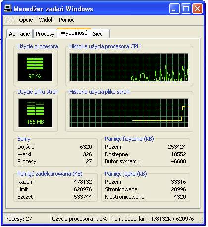
Pytanie nr 5
Z jakiego systemu plików należy skorzystać instalując Linuxa, by mieć możliwość definiowania uprawnień do plików i folderów?
A. EXT2
B. FAT32
C. NTFS
D. ISO9660
Pytanie nr 6
Cechą charakterystyczną wirusów polimorficznych jest to, że
A. atakują tablicę FAT
B. atakują rekord startowy dysku
C. zarażają wszystkie komputery w sieci lokalnej
D. mają cechę polegającą na modyfikowaniu swojego kodu
Pytanie nr 7
Na komputerze podłączonym do Internetu, w programie antywirusowym bazę wirusów należy aktualizować co najmniej
A. raz dziennie
B. raz w tygodniu
C. raz w miesiącu
D. raz do roku
Pytanie nr 8
Systemy operacyjne z rodziny Linux rozprowadzane są na podstawie licencji
A. GNU
B. MOLP
C. shareware
D. komercyjnej
Pytanie nr 9
Jakie systemy operacyjne infekuje wirus MS Blaster?
A. MS Windows 2000/NT/XP
B. MS Windows 9x
C. Linux
D. DOS
Pytanie nr 10
W dokumentacji opisano system plików
A. FAT32
B. NTFS
C. EXT4
D. FAT

Pytanie nr 11
Najlepsze zabezpieczenie komputera przed wirusami stanowi zainstalowanie
A. zapory FireWall
B. hasła dla BIOS-u
C. skanera antywirusowego
D. licencjonowanego systemu operacyjnego
Pytanie nr 12
Specyfika pracy firmy wymaga posługiwania się systemami plików charakteryzujących się dużym bezpieczeństwem i możliwością szyfrowania danych.
W tym celu należy zastosować system operacyjny Windows
A. 2000/7/XP
B. NC
C. NTSC
D. Server
Pytanie nr 13
Oprogramowanie antywirusowe może skutecznie chronić komputer. Ważne jest, aby wybrać opcję uruchamiania programu wraz z komputerem oraz opcję
A. skanowania ostatnio używanych programów
B. monitorowania w czasie rzeczywistym (skanowania w tle)
C. automatycznego kasowania zainfekowanych plików
D. automatycznego odłączenia od sieci w przypadku infekcji
Pytanie nr 14
Niektóre systemy operacyjne są wielodostępne (multiuser). Systemy takie
A. równocześnie wykonują wiele programów (zadań)
B. sterują układem (klasterem) niezależnych komputerów
C. stosowane są głównie w przemyśle i systemach sterowania
D. oprócz wielozadaniowości z wywłaszczeniem realizują funkcję przydzielania czasu użytkownikom
Pytanie nr 15
Jeżeli w systemie operacyjnym komputera zainstaluje się program nazywany Trojanem, to spowoduje on
A. wykonywanie niepożądanych działań poza kontrolą użytkownika
B. ochronę systemu operacyjnego przed działaniem wirusów
C. optymalizację działania systemu operacyjnego
D. wspomaganie działania użytkownika
Pytanie nr 16
Usługa Windows XP Professional "Mostek sieciowy" pozwala na łączenie ze sobą
A. segmentów sieci LAN
B. dwóch komputerów
C. roboczych stacji bezdyskowych
D. klienta z serwerem
Pytanie nr 17
W trybie wielozadaniowości z wywłaszczeniem zawieszony program
A. może zawiesić cały system operacyjny
B. nie może zawiesić systemu operacyjnego
C. zablokuje pracę wszystkich innych programów
D. nie pozwoli usunąć się z pamięci operacyjnej
Pytanie nr 18
Jak należy wpisać w formule arkusza kalkulacyjnego adres komórki B3, żeby przy kopiowaniu tej formuły w dowolne miejsce arkusza adres komórki B3 pozostał niezmieniony?
A. B3
B. $B3
C. B$3
D. $B$3
Pytanie nr 19
W wyniku użycia narzędzia diagnostycznego chkdsk otrzymano informacje widoczne na zrzucie ekranu. Jaką wielkość posiada pojedynczy klaster dysku?
A. 1 972 kB
B. 2 140 kB
C. 4 kB
D. 8 kB

Pytanie nr 20
Plik zaszyfrowany przez użytkownika za pomocą systemu NTFS 5.0 jest każdorazowo automatycznie szyfrowany podczas
A. zapisywania go na dysku
B. kopiowania go przez sieć
C. wysyłania go pocztą e-mail
D. odczytywania go przez innego użytkownika
Pytanie nr 21
W systemie Linux mamy następujące prawa dostępu do pewnego pliku rwxr--r-- . Jakim poleceniem zmienimy je na rwxrwx---?
A. chmod 221 nazwapliku
B. chmod 544 nazwapliku
C. chmod 770 nazwapliku
D. chmod 755 nazwapliku
Pytanie nr 22
W systemie Linux polecenie ps spowoduje wyświetlenie
A. konfiguracji Proxy Server
B. listy aktualnych procesów drukowania
C. konfiguracji serwera drukarek Print Server
D. listy aktualnych procesów zalogowanego użytkownika
Pytanie nr 23
MFT w systemie plików NTFS to
A. główny plik indeksowy partycji
B. główny rekord rozruchowy dysku
C. tablica partycji na dysku twardym
D. plik zawierający informacje dotyczące poszczególnych plików i folderów na danym woluminie
Pytanie nr 24
W systemie Windows XP na komputerze klienckim, plik "hosts" jest plikiem tekstowym, który służy do mapowania
A. dysków twardych
B. nazw hostów na adresy IP
C. nazw hostów na adresy MAC
D. nazw hostów przez serwery DNS
Pytanie nr 25
Określ wielkość klastra na podstawie zamieszczonego fragmentu komunikatu systemu WINDOWS wyświetlonego po zakończeniu działania programu format a:
A. 0,5 KB
B. 512 KB
C. 12 bitów
D. 1 457 664 bajtów
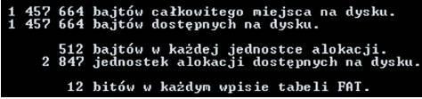
Pytanie nr 26
W systemie Linux ifconfig oznacza
A. nazwę karty sieciowej
B. narzędzie umożliwiające wyświetlenie stanu interfejsów sieciowych
C. narzędzie umożliwiające sprawdzanie znanych adresów MAC/IP
D. wykorzystanie pakietów TCP/IP do sprawdzenia stanu odległego hosta
Pytanie nr 27
Scandisk to program, który stosuje się do
A. defragmentacji dysku
B. formatowania dysku
C. oczyszczania dysku
D. sprawdzania dysku
Pytanie nr 28
Program, który dostarcza informacji o wydajności zestawu komputerowego to
A. sniffer
B. debugger
C. kompilator
D. benchmark
Pytanie nr 29
Główny rekord rozruchowy dysku twardego komputera to
A. BOOT
B. MBR
C. FAT
D. PT
Pytanie nr 30
Rezydentna część programu antywirusowego jako podstawowa forma ochrony antywirusowej, odpowiedzialna za ciągłe nadzorowanie chronionego systemu komputerowego, to
A. skaner skryptowy
B. zapora systemowa
C. monitor antywirusowy
D. moduł antyspywarowy
Pytanie nr 31
Co oznacza skrót MBR, dotyczący urządzeń techniki komputerowej?
A. Główny rekord rozruchowy SO
B. Fizyczny adres karty sieciowej
C. Bloki pamięci górnej komputera IBM/PC
D. Usługę związaną z tłumaczeniem nazw domeny
Pytanie nr 32
Na podstawie informacji z "Właściwości systemu" można wywnioskować, że na komputerze jest zainstalowana fizycznie pamięć RAM o pojemności
A. 523 MB
B. 512 MB
C. 256 MB
D. 128 MB
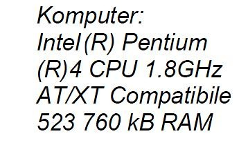
Pytanie nr 33
Manager bootowania, który pozwala na wybór systemu operacyjnego Linux do uruchomienia to
A. Ranish Partition Manager
B. Smart Boot Manager
C. Boot Magic
D. Grub
Pytanie nr 34
Wyrównanie tekstu do prawego i lewego marginesu nazywa się
A. interlinią
B. wersalikiem
C. kapitalikiem
D. justowaniem
Pytanie nr 35
W którym miejscu znajduje się nagłówek i stopka w dokumencie tekstowym Word?
A. Nagłówek jest drukowany na górnym marginesie, natomiast stopka jest drukowana na dolnym marginesie
B. Nagłówek jest drukowany na dolnym marginesie, natomiast stopka jest drukowana na górnym marginesie
C. Nagłówek znajduje się na początku dokumentu, natomiast stopka na końcu dokumentu
D. Na parzystych stronach dokumentu
Pytanie nr 36
Odwrotnością bezstratnej kompresji danych jest
A. archiwizacja
B. dekompresja
C. prekompresja
D. pakowanie danych
Pytanie nr 37
Jaki pierwszy znak w nazwie pliku w systemie Windows oznacza plik tymczasowy?
A. #
B. *
C. ~
D. &
Pytanie nr 38
Robak komputerowy to program, który
A. ma zdolność samoreplikacji
B. potrzebuje programu nosiciela
C. uaktywnia się, gdy nadejdzie odpowiednia data
D. uruchamia się, gdy użytkownik zainfekowanego komputera uruchomi jakiś program
Pytanie nr 39
W systemie operacyjnym Linux archiwizację danych wykonuje się poleceniem
A. tar
B. rpm
C. cmd
D. chmod
Pytanie nr 40
Jakie mogą być typy partycji dyskowych w systemie operacyjnym Windows?
A. Podstawowa, rozszerzona oraz dysk logiczny
B. Dodatkowa, rozszerzona, wymiany oraz dysk logiczny
C. Podstawowa, rozszerzona, wymiany, dodatkowa
D. Dodatkowa, podstawowa, rozszerzona, wymiany oraz dysk logiczny
Pytanie nr 41
Które zadanie spełnia system informatyczny?
A. Przetwarzanie danych
B. Sterowanie monitorem CRT
C. Zabezpieczanie przed wirusami
D. Kontrola pracy oprogramowania diagnostycznego
Pytanie nr 42
Cookie nazywa się plik
A. graficzny przechowujący obraz witryny sieci Web
B. tekstowy, z którego korzystają wszystkie witryny sieci
C. graficzny, z którego korzystają wszystkie witryny sieci
D. tekstowy, przechowujący informacje dla danej witryny sieci Web
Pytanie nr 43
W dokumentacji systemu operacyjnego Windows XP opisane są pliki z rozszerzeniem .dll. Rozszerzenie to dotyczy pliku
A. biblioteki
B. uruchamialnego
C. inicjalizacyjnego
D. dziennika zdarzeń
Pytanie nr 44
Licencja OEM to
A. dokument, który zezwala na używanie oprogramowania na dowolnym sprzęcie komputerowym w określonej w niej ilości stanowisk, bez instalacyjnych dyskietek, czy krążków CD
B. licencja czyniąca z oprogramowania własność ogółu, w myśl której autor lub autorzy oprogramowania zrzekają się praw do upowszechniania oprogramowania na rzecz ogółu użytkowników
C. licencja oprogramowania wyłącznie na system komputerowy, na którym zostało oryginalnie zainstalowane, dotyczy oprogramowania sprzedawanego z nowymi komputerami lub odpowiednimi częściami
D. licencja uprawniająca użytkownika do zainstalowania nabytego oprogramowania tylko w jednym komputerze, obejmująca zakaz udostępniania takiego oprogramowania w sieci oraz na innych wolnostojących komputerach
Pytanie nr 45
Gdzie w edytorze tekstu wprowadza się informację lub ciąg znaków, który ma pojawić się na wszystkich stronach dokumentu?
A. W polu tekstowym
B. W przypisach dolnych
C. W nagłówku lub stopce
D. W przypisach końcowych
Pytanie nr 46
Jeżeli w komórce arkusza kalkulacyjnego MS Excel, zamiast cyfr pojawiają się znaki ########, to należy przede wszystkim sprawdzić, czy
A. wpisana formuła zawiera błąd
B. pojawił się błąd w obliczeniach
C. wprowadzone zostały znaki tekstowe, a nie liczby
D. liczba nie mieści się w komórce i nie można jej prawidłowo wyświetlić
Pytanie nr 47
W jakim systemie operacyjnym przy instalacji sterowników do nowego urządzenia może pojawić się komunikat
A. Unix
B. Linux
C. Windows XP
D. Windows 98

Pytanie nr 48
System operacyjny działający w trybie tekstowym z możliwością uruchomienia środowiska graficznego KDE, to
A. DOS
B. Linux
C. Windows 95
D. Windows XP
Pytanie nr 49
Skaner antywirusowy wykrył niepożądane oprogramowanie. Z opisu wynika, że jest to dialer, który pozostawiony w systemie
A. zaatakuje rekord startowy dysku
B. zainfekuje załączniki poczty internetowej
C. przejmie pełną kontrolę nad komputerem
D. połączy się z płatnymi numerami telefonicznymi przy użyciu modemu
Pytanie nr 50
Co należy zrobić z wiadomością pocztową od nieznanej osoby, zawierającą niepewny załącznik?
A. Nie otwierać wiadomości, natychmiast ją usunąć
B. Otworzyć załącznik, jeśli jest w nim wirus, natychmiast go zamknąć
C. Otworzyć wiadomość i odpowiedzieć na nią, pytając co zawiera załącznik
D. Otworzyć załącznik i zapisać go na dysku twardym, a następnie sprawdzić plik programem antywirusowym
Pytanie nr 51
Cecha systemu operacyjnego, pozwalająca uruchomić równocześnie kilka aplikacji w ramach podziału czasu, przy czym podział czasu realizowany jest przez same aplikacje nosi nazwę
A. wielodostępowości
B. wielozadaniowości kooperatywnej
C. wielozadaniowości z wywłaszczeniem
D. wieloprogramowości
Pytanie nr 52
Program "VirtualPC", który można pobrać z witryny firmy Microsoft służy do korzystania:
A. z wirtualnych systemów operacyjnych na dysku lokalnym
B. z bezpłatnej pomocy technicznej TechNet.Soft firmy Virtual Soft
C. z bezpłatnego konta o pojemności 100 MB w ramach hostingu firmy Microsoft
D. z konta osobistego o pojemności 1 GB w serwerze wirtualnym firmy Microsoft
Pytanie nr 53
Zapisywanie kluczy rejestru do pliku nazywamy
A. eksportowaniem rejestru
B. kopiowaniem rejestru
C. modyfikacją rejestru
D. edycją rejestru
Pytanie nr 54
Polecenie "mmc" systemu Windows 2OOO/Windows XP uruchamia narzędzie do tworzenia, zapisywania oraz otwierania
A. plików multimedialnych, przechowujących filmy
B. pliku dziennika operacji dyskowych w systemie plików NTFS
C. katalogu wraz z jego podkatalogami na partycji sformatowanej w systemie plików NTFS
D. zestawu narzędzi administracyjnych zwanych konsolami, służących do zarządzania sprzętem i oprogramowaniem
Pytanie nr 55
Instalując system operacyjny Linux należy skorzystać z systemu plików
A. FAT32
B. NTFS 4
C. NTFS 5
D. ReiserFS
Pytanie nr 56
Szkodliwe samoreplikujące się programy komputerowe wykorzystujące luki w systemie operacyjnym, które potrafią uzupełniać i zmieniać swoją funkcjonalność to
A. robaki
B. rootkity
C. trojany
D. wirusy
Pytanie nr 57
Rozpowszechniona forma oprogramowania zgodna z zasadą "najpierw wypróbuj, a potem kup", to
A. OEM
B. Software
C. Freeware
D. Shareware
Pytanie nr 58
Zgodnie z zamieszczonym fragmentem testu w komputerze jest zainstalowana
A. pamięć fizyczna 0,50 GB i plik wymiany 1,00 GB
B. pamięć fizyczna 0,49 GB i plik wymiany 1,20 GB
C. pamięć fizyczna 0,49 GB i plik wymiany 1,22 GB
D. pamięć fizyczna 0,70 GB i plik wymiany 1,22 GB

Pytanie nr 59
W systemie Linux dla uzyskania uprawnień administratora należy w oknie terminala użyć polecenia
A. df
B. su root
C. $HOME
D. uname -s
Pytanie nr 60
Program testujący wydajność sprzętu komputerowego to
A. benchmark
B. checkdisk
C. exploit
D. sniffer
Pytanie nr 61
Jaką nazwę nosi niepożądane oprogramowanie komputerowe instalowane najczęściej bez wiedzy użytkownika?
A. Shareware
B. Slackware
C. Freeware
D. Malware
Pytanie nr 62
W ramce zamieszczono zawartość jednego z plików systemu operacyjnego MS Windows. Jest to plik
A. tekstowy, zawierający listę zainstalowanych systemów operacyjnych
B. dziennika, zawierający informacje o zainstalowanych urządzeniach
C. wykonywalny, uruchamiający edytor rejestru systemu
D. wsadowy, służący do uruchamiania instalatora
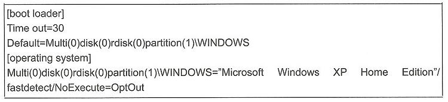
Pytanie nr 63
Domyślnie, w systemie Linux, twardy dysk w standardzie SATA oznaczony jest
A. fda
B. sda
C. ida
D. ide
Pytanie nr 64
Do sporządzenia projektu sieci komputerowej dla budynku szkoły najlepiej wykorzystać edytor grafiki wektorowej, którym jest program
A. AutoCad
B. MS Excel
C. MS Publisher
D. Adobe Photoshop
Pytanie nr 65
Trzech użytkowników komputera z zainstalowanym systemem operacyjnym Windows XP Pro ma swoje foldery z dokumentami w katalogu głównym dysku C:. Na dysku jest zainstalowany system plików NTFS. Użytkownicy mają założone w systemie konta z ograniczeniami. W jaki sposób należy zabezpieczyć folder każdego z użytkowników, by pozostali nie mogli modyfikować zawartości folderu?
A. Nadać dokumentom atrybut Ukryty we właściwościach folderów
B. Każdemu z użytkowników zmienić typ konta na konto z ograniczeniami
C. Nie udostępniać dokumentów w zakładce Udostępnianie we właściwościach folderu
D. Przypisać uprawnienia NTFS do modyfikacji folderu tylko właściwemu użytkownikowi
Pytanie nr 66
Główny księgowy musi mieć możliwość odzyskiwania zawartości folderów z kopii zapasowej plików. Do jakiej grupy użytkowników systemu MS Windows XP należy go przydzielić?
A. Użytkownicy z ograniczeniami
B. Użytkownicy pulpitu zdalnego
C. Operatorzy kopii zapasowych
D. Operatorzy konfiguracji sieci
Pytanie nr 67
Komputer jest najprawdopodobniej zainfekowany boot wirusem. Jakie działanie spowoduje usunięcie wirusa w sposób najmniej inwazyjny dla systemu operacyjnego?
A. Restart systemu
B. Uruchomienie systemu w trybie awaryjnym
C. Ponowne zainstalowanie systemu operacyjnego
D. Przeskanowanie programem antywirusowym z bootowalnego nośnika
Pytanie nr 68
Jednym z zaleceń dotyczących ochrony antywirusowej jest skanowanie całego komputera.
Zgodnie z tym zaleceniem komputer należy skanować
A. jedynie w sytuacji, gdy podejrzewamy zainfekowanie wirusem
B. tylko wtedy, gdy nie działa w systemie monitor antywirusowy
C. jedynie po aktualizacji baz programu antywirusowego
D. systematycznie, na przykład raz w tygodniu
Pytanie nr 69
Do zarządzania programami i usługami uruchamianymi wraz ze startem systemu operacyjnego w Windows 7 należy wykorzystać program
A. config.sys
B. autorun.inf
C. autoexec.bat
D. msconfig.exe
Pytanie nr 70
GRUB, LILO, NTLDR to
A. wersje głównego interfejsu sieciowego
B. aplikacje do aktualizacji BIOS-u
C. firmware dla dysku twardego
D. programy rozruchowe
Pytanie nr 71
Użytkownik zamierza zainstalować 32-bitowy system operacyjny Windows 7. Ile minimalnie pamięci RAM musi posiadać komputer, aby była możliwa praca systemu w trybie graficznym ?
A. 256 MB
B. 512 MB
C. 1 GB
D. 2 GB
Pytanie nr 72
Na nowym komputerze program antywirusowy należy zainstalować
A. w trakcie instalacji systemu operacyjnego
B. przed zainstalowaniem systemu operacyjnego
C. zaraz po zainstalowaniu systemu operacyjnego
D. po zainstalowaniu pobranych z Internetu programów
Pytanie nr 73
Instalowanie systemów Linux oraz Windows 7 przebiegło bez żadnych utrudnień. Systemy zainstalowały się poprawnie z domyślnymi ustawieniami. Na tym samym komputerze, przy identycznej konfiguracji, podczas instalowania systemu Windows XP wyświetlony został komunikat o braku dysków twardych co może świadczyć o
A. złym ułożeniu zworek w dysku twardym
B. uszkodzeniu logicznym dysku twardego
C. źle ustawionym bootowaniu napędów
D. braku sterowników
Pytanie nr 74
W systemie Windows 7 w celu skopiowania katalogu c: est wraz z podkatologami na dysk przenośny f: należy użyć polecenia
A. copy c: est f: est/E
B. copy f: est c: est/E
C. xcopy c: est f: est/E
D. xcopy f: est c: est/E
Pytanie nr 75
Zaletą systemu plików NTFS jest
A. możliwość sformatowania nośnika o małej pojemności (od 1,44MiB)
B. zapisywanie plików o nazwie dłuższej niż 255 znaków
C. przechowywanie tylko jednej kopi tabeli plików
D. możliwość szyfrowania folderów i plików
Pytanie nr 76
W systemie Windows XP w celu utworzenia nowego użytkownika o nazwie egzamin z hasłem qwerty należy użyć polecenia
A. net user egzamin qwerty /add
B. useradd egzamin qwerty /add
C. adduser egzamin qwerty /add
D. user net egzamin qwerty /add
Pytanie nr 77
Którego oprogramowania nie można używać na urządzeniach należących do instytucji rządowych lub edukacyjnych?
A. AbiWord
B. Microsoft Word
C. Windows Defender
D. Microsoft Security Essentials
Pytanie nr 78
W systemie Windows XP do zmiany typu systemu plików z FAT32 na NTFS należy wykorzystać program
A. convert.exe
B. replace.exe
C. subst.exe
D. attrib.exe
Pytanie nr 79
W systemie operacyjnym Ubuntu do monitorowania w czasie rzeczywistym uruchomionych procesów i programów służy polecenie
A. ps
B. top
C. proc
D. sysinfo
Pytanie nr 80
W celu dokonania aktualizacji zainstalowanego systemu operacyjnego Linux Ubuntu należy użyć polecenia
A. yum upgrade
B. kernel update
C. system update
D. apt-get upgrade
Pytanie nr 81
Wskaż nieprawidłowy podział dysku MBR na partycje
A. 3 partycje podstawowe i 1 rozszerzona
B. 2 partycje podstawowe i 1 rozszerzona
C. 1 partycja podstawowa i 1 rozszerzona
D. 1 partycja podstawowa i 2 rozszerzone
Pytanie nr 82
W systemie operacyjnym Fedora katalogi domowe użytkowników umieszczone są w katalogu
A. /bin
B. /user
C. /users
D. /home
Pytanie nr 83
W systemie operacyjnym Ubuntu konto użytkownika student można usunąć za pomocą polecenia
A. userdel student
B. del user student
C. net user student /del
D. user net student /del
Pytanie nr 84
Użytkownik systemu Windows otrzymuje komunikaty o zbyt małej pamięci wirtualnej. Problem ten można rozwiązać przez
A. zamontowanie dodatkowej pamięci cache procesora
B. zwiększenie rozmiaru pliku virtualfile.sys
C. zamontowanie dodatkowego dysku
D. zwiększenie pamięci RAM
Pytanie nr 85
Program WinRaR wyświetlił okienko informacyjne pokazane na rysunku. Z jakiego typu licencji na program korzystał do tej pory użytkownik?
A. adware
B. freeware
C. shareware
D. public domain

Pytanie nr 86
Licencja Windows OEM nie pozwala na wymianę
A. sprawnego zasilacza na model o lepszych parametrach
B. sprawnej płyty głównej na model o lepszych parametrach
C. sprawnej karty graficznej na model o lepszych parametrach
D. sprawnego dysku twardego na model o lepszych parametrach
Pytanie nr 87
Które konto nie jest wbudowanym w systemie Windows XP ?
A. gość
B. admin
C. pomocnik
D. administrator
Pytanie nr 88
W systemie operacyjnym Ubuntu do utworzenia archiwum danych należy wykorzystać program
A. set
B. tar
C. sed
D. awk
Pytanie nr 89
W systemach operacyjnych Windows ograniczenie użytkownikom dostępu do poszczególnych katalogów, plików lub dysków umożliwia system plików
A. FAT16
B. FAT32
C. NTFS
D. EXT2
Pytanie nr 90
Na podstawie zamieszczonej w tabeli informacji dotyczącej dysku twardego określ, który wniosek jest prawdziwy
A. Defragmentacja jest zbędna, fragmentacja plików wynosi 0%
B. Dysk wymaga defragmentacji, fragmentacja całkowita wynosi 19%
C. Defragmentacja nie jest konieczna, fragmentacja całkowita wynosi 9%
D. Należy zdefragmentować dysk, fragmentacja wolnego miejsca wynosi 19%

Pytanie nr 91
Instalowanie systemów Linux oraz Windows 7 przebiegało bez żadnych utrudnień. Systemy zainstalowały się poprawnie z domyślnymi ustawieniami. Na tym samym komputerze, przy identycznej konfiguracji, podczas instalowania systemu Windows XP wyświetlony został komunikat o braku dysków twardych, co może świadczyć o
A. złym ułożeniu zworek w dysku twardym.
B. uszkodzeniu logicznym dysku twardego.
C. źle ustawionym bootowaniu napędów.
D. braku sterowników.
Pytanie nr 92
W systemie Linux plik ma ustawione uprawnienia na 541. Właściciel może plik:
A. modyfikować
B. tylko wykonać
C. odczytać i wykonać
D. odczytać, zapisać i wykonać
Pytanie nr 93
Które z poleceń systemu Linux powoduje zakończenie procesu?
A. kill
B. end
C. null
D. dead
Pytanie nr 94
Do wyświetlania zawartości katalogu w systemie Linux służy polecenie:
A. ls
B. cd
C. rpm
D. pwd
Pytanie nr 95
Polecenie msconfig uruchamia w systemie Windows:
A. panel sterowania
B. menedżera zadań
C. menedżera plików
D. narzędzie konfiguracji systemu
Pytanie nr 96
Użytkownik systemu Windows otrzymuje komunikaty o zbyt małej pamięci wirtualnej. Problem ten można rozwiązać przez:
A. zamontowanie dodatkowej pamięci cache procesora
B. zwiększenie rozmiaru pliku virtualfile.sys
C. zamontowanie dodatkowego dysku
D. zwiększenie pamięci RAM
Pytanie nr 97
Harmonogram zadań w systemie Windows pozwala przypisać
A. Więcej niż pięć terminów wykonania dla wskazanego programu
B. Nie więcej niż trzy terminy wykonania dla wskazanego programu
C. Nie więcej niż cztery terminy wykonania dla wskazanego programu
D. Nie więcej niż pięć terminów wykonania dla wskazanego programu
Pytanie nr 98
Do oprogramowania typu malware (z ang. malicious software) nie należy oprogramowanie typu:
A. computer aided manufacturing
B. scumware
C. keylogger
D. exploit
Pytanie nr 99
Jeśli jednostka alokacji ma 1024 bajty, to pliki zamieszczone w tabeli zajmą na dysku:
A. 3 klastry
B. 4 klastry
C. 5 klastrów
D. 6 klastrów

Pytanie nr 100
Dysk z systemem plików FAT32, na którym często wykonywane są operacje kasowania starych plików oraz zapisu nowych plików, ulega:
A. defragmentacji
B. fragmentacji
C. kolokacji
D. relokacji
Pytanie nr 101
W systemie Linux hasła użytkowników są przechowywane w pliku:
A. users
B. groups
C. passwd
D. password
Pytanie nr 102
Postcardware to rodzaj
A. karty sieciowej
B. wirusa komputerowego
C. licencji oprogramowania
D. usługi poczty elektronicznej
Pytanie nr 103
Licencja wolnego i otwartego oprogramowania, to licencja
A. Trial
B. OEM
C. Adware
D. GNU GPL
Pytanie nr 104
W systemie plików NTFS zmianę nazwy pliku umożliwia uprawnienie
A. zapisu
B. odczytu
C. modyfikacji
D. odczytu i wykonania
Pytanie nr 105
Jaki wyraz należałoby wstawić w wykropkowanym miejscu na schemacie blokowym ilustrującym budowę systemu operacyjnego?
A. Sterowniki
B. Powłoka
C. Programy użytkowe
D. Benchmarki
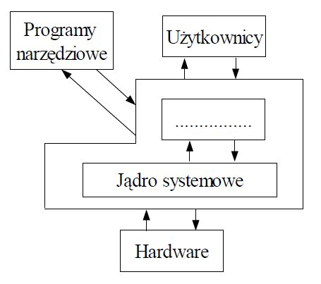
Pytanie nr 106
W celu powiększenia lub zmniejszania ikony na pulpicie należy kręcić kółkiem myszy, przytrzymując jednocześnie klawisz:
A. SHIFT
B. CTRL
C. ALT
D. TAB
Pytanie nr 107
Aby sprawdzić, który program najbardziej obciąża procesor w systemie Windows, należy uruchomić program:
A. menedżer zadań
B. msconfig
C. regedit
D. dxdiag
Pytanie nr 108
W systemie Windows ustawienia bieżącego użytkownika komputera zapisane są w gałęzi rejestru o skróconej nazwie:
A. HKCC
B. HKCR
C. HKCU
D. HKLM
Pytanie nr 109
Błąd systemu Windows typu STOP Error (Blue Screen), polegający na odwoływaniu się systemu do nieprawidłowych danych w pamięci operacyjnej, to
A. NTFS_FILE_SYSTEM
B. UNMOUNTABLE_BOOT_VOLUME
C. PAGE_FAULT_IN_NONPAGE_AREA
D. UNEXPECTED_KERNEL_MODE_TRAP
Pytanie nr 110
Po instalacji z domyślnymi ustawieniami system Windows XP nie obsługuje systemu plików
A. EXT
B. NTFS
C. FAT16
D. FAT32
Pytanie nr 111
Wyłączenie automatycznej aktualizacji systemu Windows powoduje
A. automatyczne pobieranie aktualizacji bez jej instalacji
B. zablokowanie każdego sposobu pobierania aktualizacji systemu
C. zablokowanie samodzielnego pobierania uaktualnień przez system
D. automatyczne sprawdzenie, czy jest dostępna aktualizacja i powiadomienie o niej użytkownika
Pytanie nr 112
Klawiszem F5 standardowo w programie Explorator systemu Windows aktywowana jest czynność:
A. kopiowania
B. otwierania okna wyszukiwania
C. odświeżania zawartości bieżącego okna
D. uruchamiania drukowania zrzutu ekranowego
Pytanie nr 113
Polecenie md w wierszu poleceń systemu Windows służy do
A. tworzenia pliku
B. tworzenia katalogu
C. zmiany nazwy pliku
D. przejścia do katalogu nadrzędnego
Pytanie nr 114
W systemie Windows domyślne konto administratora po jego wyłączeniu i ponownym uruchomieniu komputera
A. nie pozwala na zmianę hasła dostępu do konta
B. umożliwia uruchamianie niektórych usług z tego konta
C. jest niedostępne, gdy system uruchomi się w trybie awaryjnym
D. pozostaje dostępne po uruchomieniu systemu w trybie awaryjnym
Pytanie nr 115
Program komputerowy służący do zarządzania strukturą plików i katalogów, to:
A. system plików
B. edytor tekstowy
C. menedżer plików
D. menedżer urządzeń
Pytanie nr 116
Programu CHKDSK używa się w celu
A. defragmentacji dysku
B. zmiany systemu plików
C. naprawy logicznej struktury dysku
D. naprawy fizycznej struktury dysku
Pytanie nr 117
Programem typu wirus, którego głównym celem jest rozprzestrzenianie się w sieci komputerowej, jest:
A. robak
B. trojan
C. backdoor
D. keylogger
Pytanie nr 118
Przerywając pracę na komputerze zachowujemy możliwości szybkiego powrotu do pracy po wybraniu w systemie Windows opcji:
A. wylogowania
B. stanu wstrzymania
C. zamknięcia systemu
D. ponownego uruchomienia
Pytanie nr 119
Oprogramowanie OEM (Original Equipment Manufacturer) przypisane jest do
A. właściciela/nabywcy komputera
B. komputera (lub jego części), na którym jest zainstalowane
C. systemu operacyjnego zainstalowanego na danym komputerze
D. do wszystkich komputerów w danym gospodarstwie domowym
Pytanie nr 120
Powodem niekontrolowanego zapełnienia dysku może być
A. wirus komputerowy
B. częsta defragmentacja
C. zbyt małe jednostki alokacji plików
D. źle skonfigurowana pamięć wirtualna
Pytanie nr 121
Aby uporządkować pliki na dysku w celu przyspieszenia pracy systemu, należy:
A. wykonać defragmentację
B. usunąć pliki tymczasowe
C. odinstalować nieużywane programy
D. przeskanować dysk programem antywirusowym
Pytanie nr 122
W celu odzyskania danych usuniętych przy pomocy kombinacji klawiszy Shift + Delete, należy
A. odzyskać je z kosza systemowego
B. użyć kombinacji klawiszy Shift+Insert
C. odzyskać je z katalogu plików tymczasowych
D. skorzystać z oprogramowania do odzyskiwania danych
Pytanie nr 123
Obraz dysku tworzy się, aby
A. przyspieszyć pracę z wybranymi plikami na tym dysku
B. zabezpieczyć dane przed nieupoważnionymi użytkownikami
C. zabezpieczyć aplikacje przed nieupoważnionymi użytkownikami
D. zabezpieczyć system, aplikacje i dane przed poważną awarią komputera
Pytanie nr 124
W systemach Windows XP Pro/Windows Vista Business/Windows 7 Pro/Windows 8 Pro, opcją gwarantująca poufność danych dla użytkowników korzystających z tego samego komputera, których dane mogą być wykorzystywane wyłącznie przez nich samych, jest
A. korzystanie z własnym kont z ograniczeniami
B. samodzielne przypisywanie plikom atrybutu: ukryty
C. samodzielnie przypisywanie plikom atrybutu: zaszyfrowany
D. korzystanie z własnych kont z uprawnieniami administratora
Pytanie nr 125
Do ilu maksymalnie GB pamięci RAM może uzyskać dostęp 32-bitowa wersja systemu Windows?
A. 2 GB
B. 4 GB
C. 8 GB
D. 12 GB
Pytanie nr 126
Do przywracania struktury kluczy rejestru z kopii zapasowej w systemie Windows stosowane jest polecenie
A. reg add
B. reg load
C. reg restore
D. reg import
Pytanie nr 127
W systemie Linux polecenie chown umożliwia
A. przeniesienie pliku
B. zmianę właściciela pliku
C. naprawę systemu plików
D. zmianę parametrów pliku
Pytanie nr 128
W systemie Linux wyświetlenie informacji o uruchomionych procesach umożliwia polecenie
A. ls
B. ps
C. su
D. rm
Pytanie nr 129
W systemie Windows uruchomienie usługi dotyczącej wydajności komputera realizowane jest za pomocą polecenia
A. secpol.msc
B. services.msc
C. perfmon.msc
D. compmgmt.msc
Pytanie nr 130
Programem służącym do diagnozowania połączeń między hostami w systemie Windows jest
A. ping
B. route
C. ipconfig
D. traceroute
Pytanie nr 131
Które polecenie należy wykonać w celu zamontowania pierwszej partycji logicznej dysku primary slave w systemie Linux?
A. mount /dev/hda2 /mnt/hdd
B. mount /dev/hdb3 /mnt/hdd
C. mount /dev/hda4 /mnt/hdd
D. mount /dev/hdb5 /mnt/hdd
Pytanie nr 132
Autorskie prawo osobiste twórcy do programu komputerowego
A. nigdy nie wygasa
B. trwa 50 lat od daty pierwszej publikacji
C. trwa 70 lat od daty pierwszej publikacji
D. trwa wyłącznie przez czas życia jego twórcy
Pytanie nr 133
Oprogramowanie komputerowe, z którego można korzystać za darmo i bez ograniczeń czasowych, rozpowszechniane jest w ramach licencji typu
A. trial
B. shareware
C. donationware
D. public domain
Pytanie nr 134
Grupowa licencja oprogramowania Microsoft to licencja typu
A. GNU
B. OEM
C. MOLP
D. EULA
Pytanie nr 135
Dla zmiany zeskanowanego obrazu na tekst należy zastosować oprogramowanie wykorzystujące techniki
A. DPI
B. DTP
C. OCR
D. OMR
Pytanie nr 136
Aby sprawdzić integralność systemu plików w systemie Linux należy użyć polecenia
A. man
B. fsck
C. mkfs
D. fstab
Pytanie nr 137
W celu przywrócenia prawidłowych wersji plików systemowych, w systemie Windows stosowane jest narzędzie
A. sfc
B. debug
C. verifer
D. replace
Pytanie nr 138
Narzędzie System Image Recovery dostępne w zaawansowanych opcjach rozruchu systemu Windows 7 umożliwia
A. naprawę uszkodzonych plików startowych
B. naprawę działania systemu wykorzystując punkty przywracania
C. przywrócenie działania systemu wykorzystując jego kopię zapasową
D. uruchomienie systemu w specjalnym trybie rozwiązywania problemów
Pytanie nr 139
Plik messages w systemie Linux przechowuje
A. kody błędów systemowych
B. dane dotyczące uwierzytelniania
C. komunikaty związane z inicjacją systemu
D. ogólne informacje o zdarzeniach systemowych
Pytanie nr 140
Które z wymienionych poleceń jest stosowane w celu naprawy głównego rekordu rozruchowego dysku twardego systemu z rodziny Windows?
A. fixmbr
B. fixboot
C. bcdedit
D. bootcfg
Pytanie nr 141
Podczas przeglądania stron WWW, w celu podniesienia bezpieczeństwa prywatnych danych, jest wskazane wyłączenie w opcjach przeglądarki
A. monitów dotyczących uruchomienia skryptów
B. powiadamiania o wygasłych certyfikatach
C. blokady wyskakujących okienek
D. funkcji zapamiętywania haseł
Pytanie nr 142
Jakim poleceniem w systemie Linux, można zmienić prawa dostępu do pliku bądź katalogu?
A. chmod
B. attrib
C. iptables
D. chattrib
Pytanie nr 143
Jakim poleceniem w systemie Linux, nadamy pełny dostęp wszystkim użytkownikom do zasobów?
A. chmod 777
B. chmod 533
C. chmod 666
D. chmod 000
Pytanie nr 144
W systemie Linux plik ma ustawione uprawnienia na 541. Właściciel może plik
A. modyfikować
B. tylko wykonać
C. odczytać i wykonać
D. odczytać, zapisać i wykonać
Pytanie nr 145
Którego polecenia należy użyć w konsoli do naprawy błędów na dysku?
A. CHDIR
B. SUBST
C. CHKDSK
D. DISKCOMP
Pytanie nr 146
W celu powiększenia lub zmniejszenia ikony na pulpicie należy kręcić rolką myszki, przytrzymując jednocześnie klawisz
A. SHIFT
B. CTRL
C. ALT
D. TAB
Pytanie nr 147
W systemie Linux do monitorowania w czasie rzeczywistym uruchomionych procesów służy polecenie:
A. ps
B. sed
C. proc
D. sysinfo
Pytanie nr 148
W systemie Windows XP do zmiany typu systemu plików na dysku z FAT32 na NTFS należy skorzystać z programu
A. convert
B. replace
C. subst
D. attrib
Pytanie nr 149
Który aplet panelu sterowania w systemie Windows 7 umożliwia ograniczenie czasu pracy użytkownika na komputerze?
A. Centrum akcji
B. Windows Defender
C. Konta użytkowników
D. Kontrola rodzicielska
Pytanie nr 150
Po instalacji z domyślnymi ustawieniami system Windows XP NIE OBSŁUGUJE systemu plików
A. EXT
B. NTFS
C. FAT16
D. FAT32
Pytanie nr 151
Bezpłatnym programem antywirusowym dostarczanym przez Microsoft dla użytkowników legalnych wersji systemu operacyjnego Windows jest
A. Microsoft Security Essentials
B. Microsoft Free Antywirus
C. Windows Antywirus
D. Windows Defender
Pytanie nr 152
Licencja oprogramowania umożliwiająca darmowe rozpowszechnianie aplikacji to
A. OEM
B. MOLP
C. freeware
D. shareware
Pytanie nr 153
Program antyspyware chroni przed
A. programami typu robak
B. programami szpiegującymi
C. programami antywirusowymi
D. atakami typu DoS i DDoS(Denial of Service)
Pytanie nr 154
W komunikacie o błędzie systemu informacja wyświetlana w postaci heksadecymalnej oznacza
A. kod błędu
B. definicję błędu
C. nazwę sterownika
D. odnośnik do systemu pomocy
Pytanie nr 155
Ustawienia wszystkich użytkowników komputera zapisane są w gałęzi rejestru o akronimie
A. HKU
B. HKCR
C. HKCC
D. HKLM
Pytanie nr 156
Pliki, które znajdują się w koszu, można odzyskać poprzez zastosowanie polecenia
A. Wróć
B. Cofnij
C. Ponów
D. Przywróć
Pytanie nr 157
Kopia różnicowa polega na
A. kopiowaniu tylko plików, które zostały utworzone od czasu ostatniej kopii pełnej
B. kopiowaniu tylko plików, które zostały zmienione od czasu utworzenia ostatniej kopii pełnej
C. kopiowaniu tylko plików, które zostały utworzone lub zmienione od czasu utworzenia ostatniej kopii pełnej
D. kopiowaniu tylko tej części plików, która została dopisana od czasu utworzenia ostatniej kopii pełnej
Pytanie nr 158
Ile maksymalnie partycji podstawowych na dysku twardym z tablicą MBR pozwala utworzyć narzędzie Zarządzanie dyskami dostarczone wraz z systemem Windows?
A. 1
B. 2
C. 3
D. 4
Pytanie nr 159
W jakim systemie liczbowym są zapisane zakresy We/Wy przedstawione na rysunku?
A. Binarnym
B. Ósemkowym
C. Dziesiętnym
D. Szesnastkowym
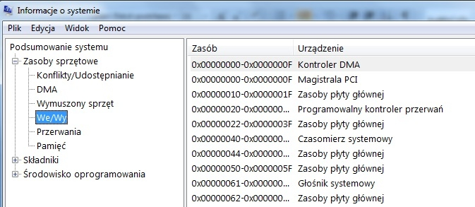
Pytanie nr 160
System plików, który umożliwia w systemie Windows kompresję danych i nadawanie uprawnień do folderów i plików, to
A. FAT
B. FAT32
C. NTFS
D. EXT
Pytanie nr 161
W systemie operacyjnym Linux ilość wolnego miejsca na dyskach można sprawdzić poleceniem
A. du
B. df
C. fstab
D. mkfs
Pytanie nr 162
Które konto nie jest kontem wbudowanym w system Windows XP?
A. Gość
B. Admin
C. Pomocnik
D. Administrator
Pytanie nr 163
W systemie Windows 7, do modyfikacji konfiguracji rozruchowej komputera za pomocą linii poleceń, należy zastosować polecenie
A. bootcfg
B. bootfix
C. bcdedit
D. config
Pytanie nr 164
Aby w systemie Windows przydzielić użytkownikowi prawo do zmiany czasu systemowego, należy użyć przystawki
A. secpol.msc
B. eventvwr.msc
C. certmgr.msc
D. services.msc
Pytanie nr 165
Które narzędzie należy użyć w systemie Windows do wyświetlenia informacji na temat problemów systemowych?
A. Zasady grupy
B. Podgląd zdarzeń
C. Foldery udostępnione
D. Harmonogram zadań
Pytanie nr 166
Oprogramowanie, przypisane do jednego komputera lub jego części, uniemożliwiające ponowną instalację na nowszym sprzęcie zakupionym przez tego samego użytkownika, to
A. MPL
B. CPL
C. MOLP
D. OEM
Pytanie nr 167
Jaka kopia w procesie archiwizacji plików pozostawia znacznik archiwizacji?
A. Normalna
B. Różnicowa
C. Całościowa
D. Przyrostowa
Pytanie nr 168
Do wykonania w systemie Linux kopii zapasowej wybranych plików należy z wiersza poleceń zastosować program
A. set
B. tar
C. cal
D. gdb
Pytanie nr 169
Przedstawiony na rysunku wpis w dzienniku zdarzeń zalicza się do zdarzeń typu
A. Błędy
B. Informacje
C. Ostrzeżenia
D. Inspekcja niepowodzeń
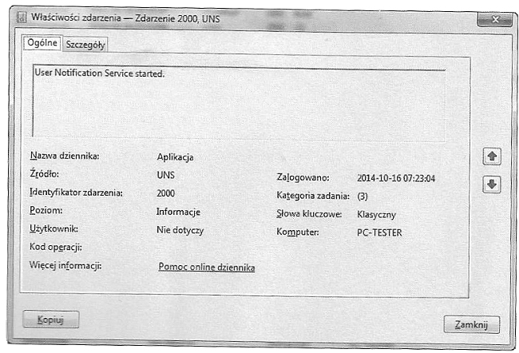
Pytanie nr 170
Które polecenie w systemie Linux uruchamia sprawdzanie dysku oraz umożliwia naprawę jego błędów?
A. fsck
B. lshw
C. fdisk
D. mkfs
Pytanie nr 171
W systemie Linux narzędziem do monitorowania użycia procesora, pamięci, procesów oraz obciążenia systemu z poziomu powłoki jest
A. top
B. pwd
C. dxdiag
D. passwd
Pytanie nr 172
Do zamiany kodu źródłowego na program wykonywalny służy
A. debuger
B. emulator
C. interpreter
D. kompilator
Pytanie nr 173
W celu dokonania aktualizacji zainstalowanego systemu operacyjnego Linux Ubuntu należy użyć polecenia
A. yum upgrade
B. kernel update
C. system update
D. apt-get upgrade
Pytanie nr 174
Do uruchomienia edytora rejestru w systemie Windows należy użyć narzędzia
A. msconfig
B. ipconfig
C. regedit
D. cmd
Pytanie nr 175
W systemie Windows, wykorzystując wiersz poleceń do zmiany partycji FAT na partycję NTFS bez utraty zawartych na niej danych, należy użyć polecenia
A. format
B. convert
C. change
D. recover
Pytanie nr 176
Który system plików należy wybrać podczas instalacji systemu Linux?
A. FAT
B. NTFS
C. EXT4
D. FAT32
Pytanie nr 177
Program, który umożliwia komunikację między kartą sieciową a systemem operacyjnym, to
A. sniffer
B. sterownik
C. middleware
D. komunikator
Pytanie nr 178
W systemie Windows wymagania co do złożoności hasła należy określić w
A. BIOS-ie
B. autostarcie
C. panelu sterowania
D. zasadach zabezpieczeń lokalnych
Pytanie nr 179
Aby dane pliku znajdującego się na dysku twardym, zapisane na niesąsiadujących ze sobą klastrach, zostały ułożone tak, by zajmowały sąsiadujące klastry, należy uruchomić
A. program chkdsk
B. program scandisk
C. oczyszczanie dysku
D. defragmentację dysku
Pytanie nr 180
Aby zwolnić miejsce na dysku bez utraty danych, należy wykonać
A. backup dysku
B. sprawdzanie dysku
C. oczyszczanie dysku
D. defragmentację dysku
Pytanie nr 181
W celu ochrony systemu przed programem posiadającym zdolność replikacji należy zainstalować
A. program szpiegowski
B. program narzędziowy
C. program antywirusowy
D. program diagnostyczny
Pytanie nr 182
Która tablica partycji umożliwia utworzenie do 128 partycji podstawowych na jednym dysku?
A. GPT
B. MBR
C. BOOT
D. NTLDR
Pytanie nr 183
Bez zezwolenia posiadacza autorskich praw majątkowych do programu komputerowego jego legalny użytkownik, zgodnie z ustawą o prawie autorskim i prawach pokrewnych
A. może rozpowszechniać program
B. nie może wykonać żadnej kopii programu
C. może wykonać dowolną liczbę kopii programu na własny użytek
D. może wykonać jedną kopię, jeśli jest to niezbędne do korzystania z programu
Pytanie nr 184
Która licencja umożliwia bezpłatne wykorzystywanie programu, pod warunkiem, że użytkownik zatroszczy się o środowisko naturalne?
A. Donationware
B. Greenware
C. Adware
D. OEM
Pytanie nr 185
Który z trybów nie jest dostępny dla narzędzia lupa w systemie Windows?
A. Pełnoekranowy
B. Zadokowany
C. Płynny
D. Lupy
Pytanie nr 186
Partycja, na której zainstalowany jest system operacyjny, nazywana jest partycją
A. rozszerzoną
B. systemową
C. folderową
D. wymiany
Pytanie nr 187
Przed wykonaniem prac serwisowych związanych z modyfikacją rejestru systemu Windows należy wykonać
A. defragmentację dysku
B. czyszczenie rejestru
C. oczyszczanie dysku
D. kopię rejestru
Pytanie nr 188
Jak nazywa się klucz rejestru systemu Windows, w którym są zapisane powiązania typów plików z obsługującymi je aplikacjami?
A. HKEY_LOCAL_RELATIONS
B. HKEY_CURRENT_PROGS
C. HKEY_CLASSES_ROOT
D. HKEY_USERS
Pytanie nr 189
Który typ plików należy utworzyć w systemie operacyjnym do zautomatyzowania najczęściej wykonywanych czynności, takich jak kopiowanie, tworzenie plików lub folderów?
A. Konfiguracyjny
B. Systemowy
C. Wsadowy
D. Inicjujący
Pytanie nr 190
Do przechowywania części plików programów i danych, które są duże i nie mogą być umieszczone w całości w pamięci, służy
A. plik stronicowania
B. schowek systemu
C. menadżer zadań
D. edytor rejestru
Pytanie nr 191
Na załączonym rysunku przedstawiono operację
A. fuzji danych
B. kompresji danych
C. kasowania danych
D. kompilacji danych
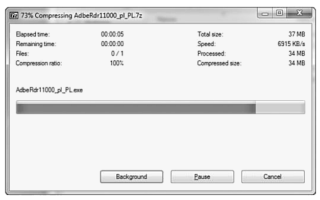
Pytanie nr 192
Aby zapobiec utracie danych w programie do prowadzenia ewidencji uczniów, należy po zakończeniu pracy każdego dnia wykonać
A. aktualizację systemu
B. kopię zapasową danych programu
C. aktualizację systemu operacyjnego
D. bezpieczne zamknięcie systemu operacyjnego
Pytanie nr 193
Przy próbie odzyskania danych z dysku, który został sformatowany należy skorzystać z programu typu
A. irc
B. p2p
C. sniffer
D. recovery
Pytanie nr 194
Jakie rozszerzenie posiadają pakiety instalacyjne systemu operacyjnego Linux?
A. ini, dll
B. zip, exe
C. tgz, dmg
D. rpm, deb
Pytanie nr 195
Większą wydajność programów multimedialnych w systemie rodziny Windows zapewnia technologia
A. GPU
B. CUDA
C. jQuery
D. DirectX
Pytanie nr 196
Wskaż program DTP
A. MS Visio
B. MS Word
C. MS Excel
D. MS Publisher
Pytanie nr 197
Przedstawiony wydruk w systemie rodziny Linux pojawi się po wydaniu komendy
A. ps
B. pwd
C. ls -la
D. free

Pytanie nr 198
W systemie Windows konto użytkownika tworzy się poleceniem
A. users
B. net user
C. useradd
D. adduser
Pytanie nr 199
Przed modyfikacją rejestru Windows, dla zapewnienia bezpieczeństwa pracy, w pierwszej kolejności należy
A. wykonać kopię zapasową ważnych dokumentów
B. sprawdzić czy na komputerze nie ma wirusów
C. uruchomić komputer w trybie awaryjnym
D. wykonać kopię zapasową rejestru
Pytanie nr 200
Programem antywirusowym nie jest
A. AVG
B. NOD32
C. AVAST
D. PacketFilter
Pytanie nr 201
Najmniej inwazyjnym, lecz skutecznym sposobem leczenia komputera zainfekowanego wirusem typu rootkit jest
A. przeinstalowanie systemu operacyjnego
B. usunięcie podejrzanych procesów z Menadżera zadań
C. uruchomienie specjalnego programu wykrywającego rootkity z zewnętrznego nośnika(np. LiveCD)
D. zainstalowanie najlepszego programu antywirusowego i włączenie go w tryb monitora - z czasem wirus zostanie sam wykryty
Pytanie nr 202
Wskaż tryb pracy, w którym komputer zużywa najmniejszą ilość energii
A. uśpienie
B. hibernacja
C. wstrzymanie
D. gotowość (pracy)
Pytanie nr 203
Użytkownik zamierza zainstalować 32-bitowy system operacyjny Windows 7. Ile minimalnie pamięci RAM musi posiadać komputer, aby była możliwa praca w trybie graficznym?
A. 256 MB
B. 512 MB
C. 1 GB
D. 2 GB
Pytanie nr 204
W systemie Windows 7 w celu skopiowania katalogu c: est wraz z podkatalogami na dysk przenośny, nalezy użyć polecenia
A. copy c: est f: est /E
B. copy f: est c: est /E
C. xcopy c: est f: est /E
D. xcopy f: est c: est /E
Pytanie nr 205
Poleceniem służącym do aktualizowania systemu operacyjnego Linux z bazami RPM jest
A. upgrade
B. zypper
C. nm
D. chmode
Pytanie nr 206
Użytkownik komputera udostępnia publicznie posiadane pliki w sieci Internet. Prawa autorskie zostaną naruszone, gdy udostępni
A. otrzymany dokument urzędowy
B. własne autorskie filmy z demonstracji publicznych
C. wykonane przez siebie zdjęcia obiektów wojskowych
D. obraz płyty systemu operacyjnego Windows 7 Home
Pytanie nr 207
Która czynność doprowadzi do nieodwracalnej utraty danych, w przypadku uszkodzenia systemu plików?
A. formatowanie dysku
B. włączenie systemu operacyjnego
C. skanowanie programem antywirusowym
D. przeprowadzenie skanowania scandiskiem
Pytanie nr 208
Narzędziem systemu Linux, służącym do monitorowania systemu przy pomocy scentralizowanego mechanizmu, jest program
A. tar
B. bcdedit
C. fsck
D. syslog
Pytanie nr 209
System plików, który nie wspiera tworzenia wewnętrznego dziennika zmian, zwanego księgowaniem to
A. ext4
B. FAT32
C. ext3
D. NTFS
Pytanie nr 210
Aby w systemie Windows utworzyć nową partycję podstawową, należy użyć przystawki
A. gpedit.msc
B. certmgr.msc
C. fsmgmt.msc
D. diskmgmt.msc
Pytanie nr 211
Adware jest oprogramowaniem
A. płatnym na zasadzie dobrowolnej darowizny
B. płatnym po określonym czasie próbnym
C. darmowym bez zastrzeżeń
D. darmowym z dołączonymi reklamami
Pytanie nr 212
W systemie Linux plik ma ustawione uprawnienia na 765. Grupa przypisana do tego pliku może go
A. odczytać, zapisać, wykonać
B. odczytać i wykonać
C. odczytać i zapisać
D. tylko odczytać
Pytanie nr 213
Do naprawy uszkodzenia sektora rozruchowego dysku w systemie Windows 7 należy wykorzystać polecenie
A. fixmbr /all
B. fixboot /renew
C. bootrec /fixmbr
D. nircmd /standby
Pytanie nr 214
Polecenie systemowe ipconfig umożliwia konfigurację
A. rejestru systemu
B. mapowania dysków sieciowych
C. interfejsów sieciowych
D. atrybutów uprawnień dostępu
Pytanie nr 215
Przy modyfikacji rejestru Windows dla zapewnienia bezpieczeństwa pracy w pierwszej kolejności należy
A. wykonać kopię zapasową ważnych dokumentów
B. wyeksportować klucze rejestru do pliku
C. sprawdzić czy nie ma błędów na dysku
D. sprawdzić czy na komputerze nie ma wirusów
Pytanie nr 216
Aby zwiększyć bezpieczeństwo prywatnych danych sesji na stronie WWW jest wskazane wyłączenie w opcjach przeglądarki
A. blokady wyskakujących okienek
B. powiadamiania o wygasłych certyfikatach
C. funkcji zapamiętywania haseł
D. blokady uruchamiania skryptów
Pytanie nr 217
Aby wstrzymać działanie programu zapisanego w pliku wsadowym Windows, do momentu naciśnięcia dowolnego klawisza należy użyć komendy
A. pause
B. echo off
C. echo on
D. stop
Pytanie nr 218
W systemie Windows 7 narzędzie trybu poleceń Cipher.exe służy do
A. przełączania monitora w tryb oczekiwania
B. podglądu plików tekstowych
C. zarządzania rozruchem systemu
D. szyfrowania i odszyfrowywania plików i katalogów
Pytanie nr 219
Program stanowiący dodatek dla systemu Windows i służący do ochrony przed oprogramowaniem szpiegującym oraz innymi niepożądanymi komponentami to
A. Windows Embedded
B. Windows Azure
C. Windows Defender
D. Windows Home Server
Pytanie nr 220
Komputer jest połączony z siecią Internet oraz nie ma zainstalowanego programu antywirusowego. Metodą na sprawdzenie, czy komputer ten jest zainfekowany wirusem, bez ingerowania w konfigurację systemu jest
A. uruchomienie programu chkdsk
B. zainstalowanie skanera pamięci
C. uruchomienie zapory sieciowej
D. wykorzystanie skanera on-line
Pytanie nr 221
Przed instalacją sterownika urządzenia peryferyjnego system operacyjny Windows powinien sprawdzać, czy sterownik posiada podpis
A. zaufany
B. cyfrowy
C. kryptograficzny
D. elektroniczny
Pytanie nr 222
Który z wymienionych systemów operacyjnych nie jest obsługiwany przez system plików ext4?
A. Fedora
B. Gentoo
C. Mandriva
D. Windows
Pytanie nr 223
Użycie polecenia attrib +h +s +r przykład.txt w linii poleceń systemu Windows spowoduje
A. zabezpieczenie pliku przykład.txt hasłem hsr
B. zapisanie ciągu znaków hsr w pliku przykład.txt
C. nadanie dla pliku przykład.txt atrybytów: ukryty, systemowy, tylko do odczytu
D. nadanie dla pliku przykład.txt atrybytów: ukryty, skompresowany, tylko do odczytu
Pytanie nr 224
Wynik działania polecenia ls -l użytego w systemie Linux przedstawia rysunek
A. A
B. B
C. C
D. D

Pytanie nr 225
Którego z poleceń systemu Linux należy użyć do utworzenia archiwum danych?
A. tar
B. cal
C. grep
D. date
Pytanie nr 226
Aby zmienić właściciela pliku w systemie Linux, należy użyć polecenia
A. ps
B. pwd
C. chown
D. chmod
Pytanie nr 227
Aby stworzyć katalog za pomocą wiersza poleceń systemu Windows, należy zastosować komendę
A. mv
B. md
C. dir
D. rmdir
Pytanie nr 228
Zastosowanie polecenia net localgroup w systemie Windows spowoduje
A. skompresowanie wszystkich plików
B. wyświetlanie zdefiniowanych w systemie lokalnych grup użytkowników
C. utworzenie dowolnej grupy użytkowników
D. defragmentację plików
Pytanie nr 229
Użycie polecenia fsck w systemie Linux spowoduje
A. sprawdzenie integralności systemu plików
B. wyświetlenie parametrów plików
C. zmianę praw dostępu do pliku
D. odszukanie pliku
Pytanie nr 230
Na rysunku przedstawiono narzędzie systemu Windows 7 przeznaczone do
A. tworzenia kopii systemu
B. przeprowadzania migracji systemu
C. konfiguracji ustawień użytkownika
D. rozwiązywania problemów z systemem

Pytanie nr 231
Zrzut ekranu przedstawia program
A. antywirusowy
B. antyspamowy
C. typu recovery
D. typu firewall

Pytanie nr 232
Aby najlepiej zabezpieczyć zgromadzone dane przed odczytem na wypadek kradzieży komputera, należy
A. zastosować atrybut ukryty dla wszystkich ważnych plików
B. wykonać punkt przywracania systemu
C. zastosować szyfrowanie partycji
D. zabezpieczyć konta hasłem
Pytanie nr 233
Przydziały dyskowe w systemach rodziny Windows
A. przydzielają partycje na dyskach
B. przydzielają etykietę (np. C) dla danej partycji
C. zapewniają podstawową funkcje diagnostyczne, defragmentację i checkdisk
D. pozwalają na zdefiniowanie maksymalnej przestrzeni dyskowej dla kont użytkowników
Pytanie nr 234
Aby nadpisać błędne wpisy w pliku boot.ini w konsoli odzyskiwania systemu Windows, należy użyć polecenia
A. fixmbr
B. fixboot
C. diskpart /add
D. bootcfg /rebuild
Pytanie nr 235
Na rysunku przedstawiono oprogramowanie monitorujące
A. SAS
B. NCQ
C. IRDA
D. SMART

Pytanie nr 236
Aby system operacyjny miał szybszy dostęp do plików znajdujących się na dysku twardym, należy przeprowadzić
A. szyfrowanie dysku
B. fragmentację dysku
C. defragmentację dysku
D. partycjonowanie dysku
Pytanie nr 237
Najbardziej efektywnym sposobem sporządzania codziennej archiwizacji pojedynczego pliku o rozmiarze 4,8 GB, na pojedynczym stanowisku komputerowym bez dostępu do sieci jest
A. nagranie na płytę DVD-5 w standardzie ISO
B. użycie pamięci USB z systemem plików NTFS
C. użycie pamięci USB z systemem plików FAT32
D. spakowanie i przechowywanie w lokalizacji sieciowej
Pytanie nr 238
Partycją systemu Linux przechowującą tymczasowo dane w przypadku braku wolnej pamięci RAM jest
A. var
B. sys
C. tmp
D. swap
Pytanie nr 239
Narzędziem umożliwiającym zarządzanie menadżerem rozruchu systemów Windows począwszy od Windows Vista jest
A. BCDEDIT
B. GRUB
C. AFFS
D. LILO
Pytanie nr 240
Które polecenie należy wydać, aby uzyskać wykaz przedstawionych plików?
A. dir *a*.jpg
B. ls -l *a* *.jpg
C. grep *a* *.jpg
D. find *.jpg | *a*
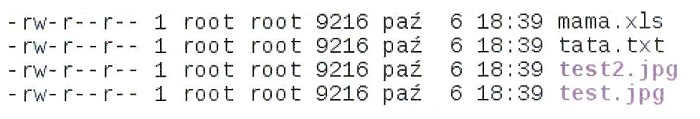
Pytanie nr 241
W wyniku wykonania przedstawionego skryptu
A. zawartość pliku ola.txt zostanie skopiowana do pliku ala.txt
B. zawartość pliku ala.txt zostanie skopiowana do pliku ola.txt
C. zostanie wpisany tekst ola.txt do pliku ala.txt
D. zostanie wpisany tekst ala.txt do pliku ola.txt
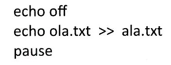
Pytanie nr 242
Aby ustawić w systemach operacyjnych rodziny Windows właściwość pliku na tylko do odczytu, należy użyć polecenia
A. chmod
B. attrib
C. ftype
D. set
Pytanie nr 243
Aby zainstalować system openSUSE i skonfigurować jego ustawienia, można wykorzystać narzędzie
A. GEdit
B. YaST
C. Brasero
D. Evolution
Pytanie nr 244
W systemach Windows można przypisać użytkownika do dowolnej grupy za pomocą przystawki
A. certsrv
B. fsmgmt
C. lusrmgr
D. services
Pytanie nr 245
Programem umożliwiającym wydzielanie logicznych części dysku twardego w systemie GNU/Linux jest
A. fdisk
B. format
C. convert
D. truncate
Pytanie nr 246
Do zarządzania przydziałami dyskowymi w systemach Windows 7 oraz Windows 8 służy narzędzie
A. fsutil
B. query
C. perfmon
D. dcpromo
Pytanie nr 247
Autorskie prawo majątkowe twórcy do programu komputerowego
A. nie jest prawem zbywalnym
B. nie jest ograniczone w czasie
C. można przenosić na inną osobę
D. trwa 25 lat od daty pierwszej publikacji
Pytanie nr 248
Uruchamianie programu w dowolnym celu, analizowanie działania programu oraz jego modyfikowanie wraz z możliwością publicznego rozpowszechniania tych zmian jest cechą licencji typu
A. MOLP
B. GNU GPL
C. ADWARE
D. FREEWARE
Pytanie nr 249
Przypisanie licencji oprogramowania do jednego komputera lub jego podzespołów jest cechą licencji
A. OEM
B. BOX
C. AGPL
D. TRIAL
Pytanie nr 250
Użytkownik Jan nie może zmienić właściciela drukarki w systemie Windows. Aby miał taką możliwość, należy przypisać mu w opcjach zabezpieczeń prawo do
A. zmiany uprawnień drukowania
B. zarządzania dokumentami
C. zarządzania drukarkami
D. uprawnień specjalnych
Pytanie nr 251
Odpowiednikiem Linuksowego programu fsck w systemach rodziny Windows jest program
A. erase
B. icacls
C. tasklist
D. chkdsk
Pytanie nr 252
Programem nie służącym do diagnostyki podzespołów komputera jest
A. CPU-Z
B. Everest
C. HD Tune
D. Cryptic Disk
Pytanie nr 253
Aby uruchomić tryb awaryjny w systemach rodziny Windows, należy podczas uruchamiania komputera wcisnąć klawisz
A. F1
B. F7
C. F8
D. F10
Pytanie nr 254
Program df działający w systemach rodziny Linux umożliwia wyświetlenie
A. nazwy bieżącego katalogu
B. tekstu pasującego do wzorca
C. zawartości ukrytego katalogu
D. informacji o wolnej przestrzeni dyskowej
Pytanie nr 255
Aby odzyskać utracone dane w systemach rodziny Windows, należy zastosować polecenie
A. relase
B. renew
C. reboot
D. recover
Pytanie nr 256
Program tar umożliwia
A. zarządzanie pakietami
B. archiwizowanie plików
C. konfigurowanie karty sieciowej
D. wyświetlanie listy aktywnych procesów
Pytanie nr 257
Aby blokować i usuwać szkodliwe oprogramowanie typu exploit, robaki oraz trojany, należy zainstalować oprogramowanie
A. antymalware
B. antyspyware
C. antyspam
D. adblock
Pytanie nr 258
W systemie Linux informacje o okresie ważności hasła są zapisane w pliku
A. bash
B. grub
C. passwd
D. shadow
Pytanie nr 259
Liczby 1001 oraz 100 w wierszu pliku /etc/passwd oznaczają
A. liczbę udanych i nieudanych prób logowania
B. identyfikatory użytkownika i grupy w systemie
C. numer koloru czcionki i numer koloru tła w terminalu
D. liczbę dni od ostatniej zmiany hasła i liczbę dni do wygaśnięcia hasła

Pytanie nr 260
Po wydaniu polecenia: net user w wierszu poleceń systemu Windows, zostanie wyświetlona
A. lista kont użytkowników
B. pomoc dotycząca polecenia net
C. nazwa aktualnego użytkownika i jego hasło
D. informacja o parametrach konta zalogowanego użytkownika
Pytanie nr 261
W systemie Windows użytkownik oraz wszystkie grupy, do których on należy mają uprawnienia "odczyt" do folderu XYZ. Użytkownik ten będzie mógł wykonywać operacje
A. usunięcia folderu XYZ
B. zmiany nazwy folderu XYZ
C. kopiowania plików do folderu XYZ
D. odczytu uprawnień do folderu XYZ
Pytanie nr 262
Którego kodu numerycznego należy użyć w poleceniu zmiany uprawnień do folderu w systemie Linux, aby właściciel folderu miał uprawnienia zapisu i odczytu, grupa miała uprawnienia odczytu i wykonania, a pozostali użytkownicy tylko uprawnienia odczytu?
A. 765
B. 751
C. 654
D. 123
Pytanie nr 263
Które z poleceń należy wydać w systemie Windows 7, aby bezpośrednio z wiersza poleceń uruchomić program Zapora systemu Windows z zabezpieczeniami zaawansowanymi?
A. wf.msc
B. services.msc
C. perfmon.msc
D. compmgmt.msc
Pytanie nr 264
Zwykły użytkownik systemu Linux, który chce usunąć konto innego użytkownika razem z jego katalogiem domowym, powinien wydać polecenie
A. userdel nazwa_użytkownika
B. userdel -d nazwa_użytkownika
C. sudo userdel nazwa_użytkownika
D. sudo userdel -r nazwa_użytkowania
Pytanie nr 265
Dystrybucje systemu Linux Ubuntu rozpowszechniane są na licencjach
A. Public Domain
B. GNU GPL
C. Freeware
D. MOLP
Pytanie nr 266
Informacje o błędach działania systemu operacyjnego Linux można uzyskać za pomocą narzędzia
A. grub
B. watch
C. syslog
D. netstat
Pytanie nr 267
W systemie Linux do monitorowania bieżących procesów służy polecenie
A. df
B. ps
C. free
D. watch
Pytanie nr 268
Monitor wydajności i niezawodności w systemie Windows jest uruchamiany za pomocą przystawki
A. diskmgmt.msc
B. taskschd.msc
C. perfmon.msc
D. fsmgmt.msc
Pytanie nr 269
Użycie komendy perfmon w wierszu poleceń systemu Windows spowoduje
A. wykonanie kopii zapasowej systemu
B. włączenie szyfrowania zawartości folderu bieżącego
C. uruchomienie narzędzia Monitor wydajności
D. aktualizację systemu operacyjnego za pomocą usługi Windows Update
Pytanie nr 270
Narzędzia dostrajania oraz Unity Tweak Tool to narzędzia systemu Linux służące do
A. nadawania uprawnień do zasobów systemowych
B. zarządzania kontami użytkownika
C. konfiguracji zapory systemowej
D. personalizacji systemu
Pytanie nr 271
Specjalny interfejs wizualny systemu Windows, którego cechą charakterystyczną jest przezroczystość przypominająca szkło oraz subtelne animacje okien, to
A. Aero
B. Luna
C. Royale
D. Gnome
Pytanie nr 272
Do utworzenia partycji w systemie Windows można użyć przystawki
A. dsa.msc
B. dfsgui.msc
C. devmgmt.msc
D. diskmgmt.msc
Pytanie nr 273
Narzędziem wiersza poleceń w systemie Windows, służącym do kompresji oraz dekompresji plików i folderów, jest program
A. Expand.exe
B. Compact.exe
C. DiskPart.exe
D. CleanMgr.exe
Pytanie nr 274
Aby chronić system przed atakami z sieci określanymi mianem phishing, nie zaleca się
A. korzystania z bankowości elektronicznej
B. używania starszych przeglądarek internetowych
C. korzystania z serwisów WWW używających protokołu HTTPS
D. uaktualniania oprogramowania do obsługi poczty elektronicznej
Pytanie nr 275
Zagrożeniem dla bezpieczeństwa systemu operacyjnego, wymuszającym jego automatyczną aktualizację, są
A. niewłaściwie ustawione prawa do plików
B. luki w oprogramowaniu systemowym
C. błędnie zainstalowane sterowniki urządzeń
D. błędne hasła użytkowników z prawami administratora
Pytanie nr 276
Ikona z wykrzyknikiem przedstawiona na rysunku, która występuje przy nazwie urządzenia w Menedżerze urządzeń, oznacza, że urządzenie to
A. działa poprawnie
B. zostało wyłączone
C. nie działa poprawnie
D. sterowniki na nim zainstalowane mają nowszą wersję
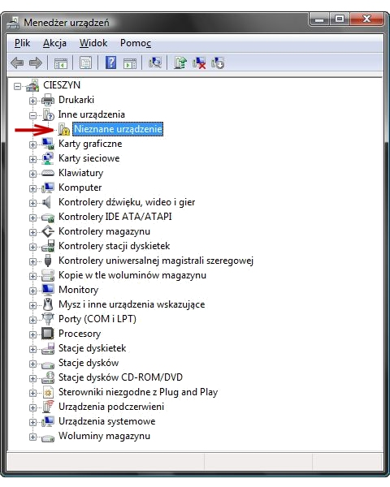
Pytanie nr 277
Uruchomienie systemu Windows jest niemożliwe z powodu usterki programowej. Aby dokonać możliwie najmniej inwazyjnej diagnozy i usunięcia tej usterki, wskazane jest
A. uruchomienie komputera w trybie awaryjnym
B. wykonanie reinstalacji systemu Windows
C. wykonanie diagnostyki podzespołów
D. wykonanie wymiany podzespołów
Pytanie nr 278
W systemie Windows przypadkowo usunięto konto użytkownika bez usunięcia katalogu domowego. Odzyskanie niezaszyfrowanych danych z katalogu domowego użytkownika jest
A. możliwe wyłącznie przy użyciu programu typu recovery
B. niemożliwe, dane są bezpowrotnie utracone wraz z kontem
C. możliwe za pomocą konta o uprawnieniach administratorskich
D. niemożliwe, ponieważ zabezpieczenia systemowe blokują dane
Pytanie nr 279
Jednym z narzędzi używanych do tworzenia kopii partycji i dysków jest
A. Diskpart
B. Gparted
C. Norton Ghost
D. CrystalDiskInfo
Pytanie nr 280
W komputerze zamontowano nowy dysk twardy o pojemności 8 TB i podzielono go na 2 partycje, każda po 4 TB wielkości. Którego typu tablicy partycji należy użyć, aby można było dokonać takiego partycjonowania?
A. GPT
B. MBR
C. SWAP
D. FAT32
Pytanie nr 281
Administrator systemu Linux wylistował zawartość katalogu /home/szkola w terminalu i uzyskał następujący wynik -rwx -x r-x 1 admin admin 25 04-09 15:17 szkola.txt Następnie wydał polecenie: chmod ug=rw szkola.txt | Is -I Jaki będzie efekt jego działania, wyświetlony w oknie terminala?
A. -rw- rw- rw- 1 admin admin 25 04-09 15:17 szkola.txt
B. -rwx ~x rw- 1 admin admin 25 04-09 15:17 szkola.txt
C. -rwx r-x r-x 1 admin admin 25 04-09 15:17 szkola.txt
D. -rw- rw- r-x 1 admin admin 25 04-09 15:17 szkola.txt
Pytanie nr 282
W systemie Windows za pomocą polecenia assoc można
A. wyświetlić atrybuty plików
B. porównać zawartość dwóch plików
C. zmienić skojarzenia rozszerzeń plików
D. zmodyfikować listę kontroli dostępu do plików
Pytanie nr 283
Aby zapobiec nieautoryzowanym zmianom na koncie użytkownika w systemie Windows 7, 8 lub 10 wymagającym uprawnień administratora, należy skonfigurować
A. UAC
B. JOBS
C. POPD
D. SUDO
Pytanie nr 284
Którą z opcji konfiguracji ustawień użytkownika z ograniczonymi uprawnieniami w systemie Windows, umożliwia przystawka secpol?
A. Zezwolenie na zmianę czasu systemowego
B. Odebranie możliwości zapisu na płytach CD
C. Blokadę określonych elementów w panelu sterowania
D. Czyszczenie historii niedawno otwieranych dokumentów
Pytanie nr 285
Minimalną długość hasła użytkownika w systemie Windows można ustawić za pomocą polecenia
A. net user
B. net config
C. net accounts
D. net computer
Pytanie nr 286
Rysunek przedstawia wynik wykonania programu
A. dir
B. vol
C. tree
D. sort

Pytanie nr 287
Administrator systemu Windows zauważył wyraźne spowolnienie pracy komputera spowodowane małą ilością wolnej pamięci RAM. Aby sprawdzić, który program zużywa jej najwięcej należy użyć programu
A. top
B. rem
C. schtsk
D. tasklist
Pytanie nr 288
Użytkownik systemu Windows za pomocą programu Cipher może
A. chronić dane przez szyfrowanie plików
B. przeskanować system w poszukiwania malware
C. wykonać przyrostową kopię zapasową plików systemowych
D. usunąć konto użytkownika wraz z jego profilem oraz dokumentami
Pytanie nr 289
Prawo do modyfikowania kodu oprogramowania przez jego użytkownika daje licencja typu
A. BOX
B. MOLP
C. GNU GPL
D. FREEWARE
Pytanie nr 290
Który typ licencji uprawnia do dowolnych modyfikacji, kopiowania oraz rozpowszechniania po uiszczeniu dowolnej opłaty na rzecz autora?
A. adware
B. shareware
C. postcardware
D. donationware
Pytanie nr 291
Użytkownik systemu Linux, chcąc przetestować dysk twardy pod kątem występowania na nim uszkodzonych sektorów, może użyć programu
A. fsck
B. defrag
C. chkdisk
D. scandisk
Pytanie nr 292
Użytkownik ma problem z rozruchem systemu Windows. Aby to naprawić, uruchomił narzędzie System Image Recovery, które
A. przywraca system na podstawie kopii zapasowej
B. naprawia pliki startowe, wykorzystując płytę Recovery
C. odtwarza system wykorzystując w tym celu punkty przywracania
D. odzyskuje ustawienia systemu, korzystając z kopii rejestru systemowego backup.reg
Pytanie nr 293
Za pomocą polecenia taskmgr użytkownik systemu Windows może
A. naprawić błędy systemu plików
B. odzyskać uszkodzone sektory dysku
C. zakończyć działanie wadliwej aplikacji
D. wykonać aktualizację sterowników systemowych
Pytanie nr 294
Do sprawdzania rozmiaru katalogu w systemie Linux służy polecenie
A. du
B. cp
C. ps
D. rm
Pytanie nr 295
W systemie Windows po wydaniu polecenia systeminfo NIE UZYSKA SIĘ informacji o
A. liczbie procesorów
B. liczbie partycji podstawowych
C. zainstalowanych poprawkach
D. zamontowanych kartach sieciowych
Pytanie nr 296
W strategii archiwizacji danych zwanej Dziadek – Ojciec – Syn na poziomie Dziadek wykonuje się kopię danych na koniec
A. dnia
B. roku
C. miesiąca
D. tygodnia
Pytanie nr 297
Programem służącym do archiwizacji danych w systemie Linux jest
A. compress
B. lzma
C. gzip
D. tar
Pytanie nr 298
Odnalezienie głównego rekordu rozruchowego, wczytującego system z aktywnej partycji umożliwia
A. POST
B. CDDL
C. BootstrapLoader
D. GUID Partition Table
Pytanie nr 299
W systemach Linux, aby dodać repozytorium, można użyć poleceń
A. zypper ar oraz add-apt-repository
B. zypper ref oraz add-apt-repository
C. zypper rr oraz remove-apt-repository
D. zypper lr oraz remove-apt-repository
Pytanie nr 300
Aby w systemie Windows ustawić właściwości wszystkich zainstalowanych urządzeń lub wyświetlić ich listę, należy użyć narzędzia
A. devmgmt.msc
B. dnsmgmt.msc
C. diskmgmt.msc
D. dhcpmgmt.msc
Pytanie nr 301
W systemie Windows użycie prezentowanego polecenia spowoduje tymczasową zmianę koloru
A. tła i czcionki okna Windows
B. paska nazwy okna Windows
C. czcionki wiersza poleceń
D. tła okna wiersza poleceń

Pytanie nr 302
Która czynność NIE służy do personalizacji systemu operacyjnego Windows?
A. Ustawienie koloru lub kilku przenikających się kolorów jako tła pulpitu
B. Ustawienie opcji wyświetlania pasków menu i pasków narzędziowych
C. Ustawienie domyślnej przeglądarki internetowej
D. Ustawienie wielkości partycji wymiany
Pytanie nr 303
Do konfiguracji i personalizacji środowiska graficznego GNOME w różnych systemach Linux należy wykorzystać program
A. GNU Compiller Collection
B. GNOME Tweak Tool
C. GIGODO Tools
D. GNOMON 3D
Pytanie nr 304
Narzędziem wiersza poleceń w systemie Windows, umożliwiającym zamianę tablicy partycji GPT na MBR, jest program
A. diskpart
B. gparted
C. bcdedit
D. cipher
Pytanie nr 305
Aby wyświetlić przedstawioną informację o systemie Linux w terminalu, mależy użyć polecenia
A. hostname
B. uname -a
C. factor 22
D. uptime

Pytanie nr 306
Przedstawione wbudowane narzędzie systemów Windows w wersji Enterprise lub Ultimate służy do
A. kryptograficznej ochrony danych na dyskach
B. konsolidacji danych na dyskach
C. tworzenia kopii dysku
D. kompresji dysku
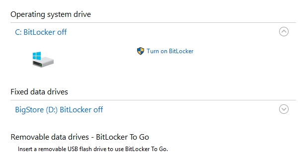
Pytanie nr 307
Do wykonania obrazu dysku twardego można użyć programu
A. Digital Image Recovery
B. Acronis True Image
C. HW Monitor
D. SpeedFan
Pytanie nr 308
Umowa, na mocy której użytkownik ma między innymi wgląd do kodu źródłowego oprogramowania w celu jego analizy oraz udoskonalania, to licencja
A. OLP
B. OEM
C. MOLP
D. GNU GPL
Pytanie nr 309
Pliki specjalne urządzeń, tworzone podczas instalacji sterowników w systemie Linux, są zapisywane w katalogu
A. /dev
B. /var
C. /sbin
D. /proc
Pytanie nr 310
Narzędziem systemu Windows, służącym do sprawdzenia wpływu poszczególnych procesów i usłg na wydajność procesora oraz tego, w jakim stopniu generują one obciążenie pamięci czy dysku, jest
A. resmon
B. credwiz
C. cleanmgr
D. dcomcnfg
Pytanie nr 311
Polecenie uname -s w systemie Linux jest wykorzystywane do sprawdzania
A. ilości wolnej pamięci
B. nazwy jądra systemu operacyjnego
C. wolnego miejsca na dyskach twardych
D. statusu aktywnych interfejsów sieciowych
Pytanie nr 312
Przedstawiona na diagramie strategia zapisu kopii zapasowych na nośnikach nosi nazwę
A. round-robin
B. wieża Hanoi
C. uproszczony GFS
D. dziadek-ojciec-syn
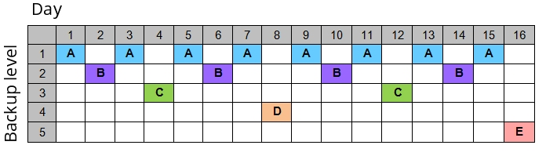
Pytanie nr 313
Po wykonaniu eksportu klucza HKCR zostanie zapisana kopia rejestru, zawierająca informacje dotyczące konfiguracji
A. kont użytkowników
B. sprzętowej komputera
C. pulpitu zalogowanego użytkownika
D. powiązań między typami plików a aplikacjami
Pytanie nr 314
System Windows 8, w którym wcześniej utworzono punkt przywracania systemu, uległ awarii. Które polecenie należy wydać, aby przywrócić pliki i ustawienia systemu?
A. rstrui
B. reload
C. replace
D. rootkey
Pytanie nr 315
Jaki rodzaj tablicy partycji należy wybrać, aby utworzyć na dysku twardym partycję o wielkości 3TB?
A. GPT
B. LBA
C. MBR
D. DRM
Pytanie nr 316
Przedstawiony komunikat jest wynikiem działania polecenia
A. path C:Windows
B. attrib C:Windows
C. subst C:Windows
D. icacls C:Windows

Pytanie nr 317
Jednym z efektów wykonania przedstawionego polecenia jest
A. zmiana hasła bieżącego użytkownika na test
B. ustawienie możliwości zmiany hasła po upływie jednego dnia
C. wymuszenie konieczności tworzenia haseł minimum pięcioznakowych
D. automatyczna blokada konta użytkownika test po pięciokrotnym błędnym podaniu hasła
Pytanie nr 318
Jaka jest różnica pomiędzy poleceniem ps a poleceniem top w systemie Linux?
A. Polecenie top umożliwia wyświetlenie PID procesu, a ps nie
B. Polecenie ps pozwala na wyświetlenie uprawnień, z jakimi działa proces, a top nie pozwala
C. Polecenie ps nie pokazuje stopnia wykorzystania CPU, a polecenie top ma taką funkcjonalność
D. Polecenie top wyświetla aktualnie działające w systemie procesy odświeżając na bieżąco informacje, a ps nie
Pytanie nr 319
Program o nazwie dd, dla którego przedstawiono przykład zastosowania w systemie Linux, pozwala na
A. utworzenie dowiązania symbolicznego Linux.iso do katalogu
B. konwersję systemu plików z wersji ext3 na ext4
C. konfigurowanie interfejsu karty sieciowej
D. stworzenie obrazu nośnika danych

Pytanie nr 320
Która przystawka w systemie Windows umożliwia sprawdzenie stanu sprzętu, aktualizację sterowników oraz rozwiązanie konfliktów urządzeń?
A. services
B. perfmon
C. eventvwr
D. devmgmt
Pytanie nr 321
Integralną częścią systemu Windows 10 chroniącą jego użytkowników przed złośliwym oprogramowaniem jest program
A. Microsoft Security Essentials
B. Windows PowerShell
C. Microsoft Hyper-V
D. Windows Defender
Pytanie nr 322
Licencją wolnego i otwartego oprogramowania jest
A. BOX
B. GNU GPL
C. ADWARE
D. FREEWARE
Pytanie nr 323
W systemie Linux program fsck pozwala na
A. zlokalizowanie i naprawę uszkodzonych sektorów na dysku twardym
B. usuwanie błędnych wpisów w rejestrze systemowym
C. testowanie wydajności karty sieciowej
D. monitorowanie stanu procesora
Pytanie nr 324
Uruchomienie systemu Windows w trybie debugowania pozwala na
A. eliminację błędów w działaniu systemu
B. uruchomienie systemu z ostatnią poprawną konfiguracją
C. tworzenie pliku dziennika LogWin.txt podczas startu systemu
D. zapobieganie ponownemu automatycznemu uruchamianiu systemu w przypadku wystąpienia błędu
Pytanie nr 325
Ogólne informacje o zdarzeniach systemowych w systemie Linux są przechowywane w
A. pliku messages
B. programie perfmon
C. rejestrze systemowym
D. bibliotece RemoteApp
Pytanie nr 326
Przedstawioną diagnostykę systemu Linux można zrealizować za pomocą polecenia
A. whoami
B. lscpu
C. pwd
D. cat

Pytanie nr 327
Którym programem NIE można się posłużyć, aby odzyskać dane w systemie Windows na podstawie wcześniej utworzonej kopii?
A. Acronis True Image
B. Norton Ghost
C. Clonezilla
D. FileCleaner
Pytanie nr 328
Do zmiany nazwy pliku i jego lokalizacji w systemie Windows służy polecenie
A. set
B. move
C. mkdir
D. rename
Pytanie nr 329
Jakiego programu wbudowanego w system Windows 8 Pro można użyć, aby zaszyfrować dane?
A. BitLocker
B. AppLocker
C. OneLocker
D. WinLocker
Pytanie nr 330
Jeśli użytkownik wybierze pozycję wskazaną strzałką, będzie mógł zainstalować aktualizacje
A. dotyczące luk w zabezpieczeniach o priorytecie krytycznym
B. usuwające usterkę krytyczną, niezwiązaną z zabezpieczeniami
C. powodujące uaktualnienie Windows 8.1 do systemu Windows 10
D. dotyczące sterowników lub nowego oprogramowania firmy Microsoft
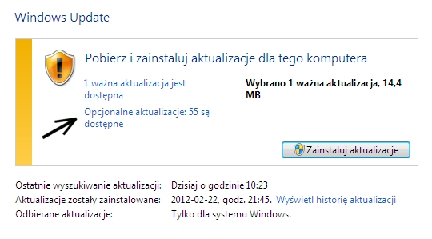
Pytanie nr 331
Aby uruchomić przedstawione narzędzie systemu Windows, należy użyć polecenia
A. control userpasswords2
B. show userpasswords
C. net localgroup
D. net users

Pytanie nr 332
W systemie Windows do instalacji aktualizacji oraz przywracania sterowników urządzeń należy użyć przystawki
A. certmgr.msc
B. fsmgmt.msc
C. devmgmt.msc
D. wmimgmt.msc
Pytanie nr 333
Jakiego narzędzia wraz z parametrami, należy użyć w systemie Windows, aby wyświetlić przedstawione informacje o dysku twardym?
A. hdparm
B. diskpart
C. ScanDisc
D. DiskUtility
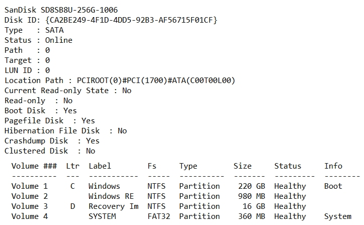
Pytanie nr 334
Do utworzenia skompresowanego archiwum danych w systemie Linux można użyć polecenia
A. tar -zcvf
B. tar -jxvf
C. tar -tvf
D. tar -xvf
Pytanie nr 335
Jak nazywa się rodzaj licencji, który sprawia, że program jest w pełni funkcjonalny, ale można go uruchomić jedynie określoną, niewielką liczbę razy od momentu instalacji?
A. Donationware
B. Trialware
C. Adware
D. Box
Pytanie nr 336
Aby odzyskać dane ze sformatowanego dysku twardego, należy wykorzystać program
A. RECUVA
B. CDTrack Rescue
C. Acronis True Image
D. CD Recovery Toolbox Free
Pytanie nr 337
Do dynamicznej obsługi sprzętu w Linuxie jest stosowany system
A. udev
B. ulink
C. uname
D. uptime
Pytanie nr 338
Aby sprawdzić statystyki użycia pamięci wirtualnej w systemie Linux, należy sprawdzić zawartość pliku
A. xload
B. /etc/inittab
C. pagefile.sys
D. /proc/vmstat
Pytanie nr 339
W systemie Windows do uruchomienia przedstawionego narzędzia należy użyć polecenia
A. secpol
B. resmon
C. taskmgr
D. dcomcnfg
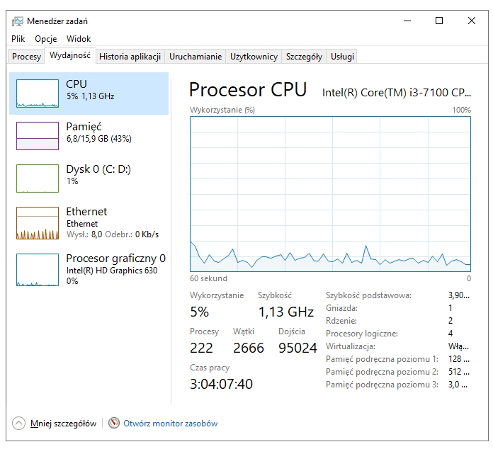
Pytanie nr 340
Które polecenie systemu Linux wyświetla czas pracy systemu oraz jego średnie obciążenie?
A. uptime
B. uname -a
C. lastreboot
D. dmidecode
Pytanie nr 341
Co NIE wpływa na utratę danych z pamięci masowej HDD?
A. Zniszczenie talerzy dysku
B. Fizyczne uszkodzenie dysku
C. Sformatowanie partycji dysku
D. Utworzona macierz dyskowa RAID 5
Pytanie nr 342
Użytkownik systemu Windows wybrał opcję powrót do punktu przywracania. Które pliki powstałe po wybranym punkcie NIE zostaną naruszone przez tę akcję?
A. Pliki osobiste
B. Pliki aplikacji
C. Pliki aktualizacji
D. Pliki sterowników
Pytanie nr 343
Której funkcji należy użyć do wykonania kopii zapasowej rejestru systemowego w edytorze regedit?
A. Załaduj gałąź rejestru
B. Kopiuj nazwę klucza
C. Eksportuj
D. Importuj
Pytanie nr 344
Użytkownik chce tak zmodernizować komputer, aby działały na nim gry wymagające DirectX12. Jaki system operacyjny powinien zakupić do modernizowanego komputera, aby wspierał DX12?
A. Windows XP
B. Windows 8
C. Windows 8.1
D. Windows 10
Pytanie nr 345
Wykonanie polecenia NET USER GRACZ * /ADD zapisanego w wierszu poleceń Windows spowoduje
A. dodanie konta GRACZ z hasłem *
B. wyświetlenie monitu o podanie hasła
C. wyświetlenie komunikatu o niewłaściwej składni polecenia
D. dodanie konta GRACZ bez hasła i przypisanie mu uprawnień administratora komputera
Pytanie nr 346
W systemie Linux, aby wyświetlić informację o nazwie bieżącego katalogu roboczego, należy zastosować polecenie
A. cat
B. pwd
C. echo
D. finger
Pytanie nr 347
W systemie Linux, aby wyszukać wszystkie pliki z rozszerzeniem txt, które znajdują się w katalogu /home/user i zaczynają się na literę a lub literę b lub literę c, należy wydać polecenie
A. ls /home/user/abc*.txt
B. ls /home/user/[a-c]*.txt
C. ls /home/user/[!abc]*.txt
D. ls /home/user/a?b?c?.txt
Pytanie nr 348
W systemie Linux polecenie chmod 321 start spowoduje nadanie następujących uprawnień plikowi start:
A. pełna kontrola dla użytkownika root, zapis i odczyt dla użytkownika standardowego, odczyt dla pozostałych
B. wykonanie i zapis dla właściciela pliku, zapis dla grupy, wykonanie dla pozostałych
C. czytanie, zapis i wykonanie dla właściciela pliku, zapis i wykonanie dla grupy i czytanie dla pozostałych
D. zapis, odczyt i wykonanie dla użytkownika root, odczyt i wykonanie dla użytkownika standardowego, odczyt dla pozostałych
Pytanie nr 349
Narzędziem do monitorowania wydajności i niezawodności w systemach Windows 7, Windows Server 2008 R2 oraz Windows Vista jest
A. dfrg.msc
B. tsmmc.msc
C. perfmon.msc
D. devmgmt.msc
Pytanie nr 350
W systemie Linux do monitorowania użycia procesora, pamięci, procesów i obciążenia systemu służy polecenie
A. top
B. rev
C. grep
D. ifconfig
Pytanie nr 351
W systemie Windows ochrona polegająca na ostrzeganiu przed uruchomieniem nierozpoznanych aplikacji i plików pobranych z Internetu jest realizowana przez
A. Windows Ink
B. Windows Update
C. Windows SmartScreen
D. zaporę systemu Windows
Pytanie nr 352
Licencja na Office 365 PL Personal (1 stanowisko, subskrypcja na 1 rok) ESD jest przypisana do
A. dowolnej liczby użytkowników, wyłącznie na jednym komputerze do celów komercyjnych i niekomercyjnych
B. wyłącznie jednego użytkownika na jednym komputerze i jednym urządzeniu mobilnym do celów komercyjnych i niekomercyjnych
C. wyłącznie jednego użytkownika, na jednym komputerze, jednym tablecie i jednym telefonie, wyłącznie do celów niekomercyjnych
D. dowolnej liczby użytkowników, wyłącznie na jednym komputerze do celów komercyjnych
Pytanie nr 353
Aby użytkownik notebooka z systemem Windows 7 lub nowszym mógł używać drukarki za pośrednictwem sieci WiFi, powinien zainstalować drukarkę na porcie
A. Nul
B. WSD
C. LPT3
D. COM3
Pytanie nr 354
Podczas zamykania systemu operacyjnego na ekranie pojawił się błąd, tak zwany bluescreen 0x000000F3 Bug Check 0xF3 DISORDERLY_SHUTDOWN - niepowodzenie zamykania systemu, spowodowane brakiem pamięci. Błąd ten może wskazywać na
A. przegrzanie procesora
B. uszkodzenie partycji systemowej
C. niewystarczający rozmiar pamięci wirtualnej
D. uruchamianie zbyt wielu aplikacji przy starcie komputera
Pytanie nr 355
Błędy systemu operacyjnego Windows spowodowane przez konflikty zasobów sprzętowych, takie jak przydział pamięci, przydział przerwań IRQ i kanałów DMA, najłatwiej jest wykryć za pomocą narzędzia
A. chkdsk
B. edytor rejestru
C. menedżer urządzeń
D. przystawka Sprawdź dysk
Pytanie nr 356
Wskaż program systemu Linux, służący do kompresji danych
A. arj
B. tar
C. gzip
D. shar
Pytanie nr 357
Aby wyeliminować podstawowe zagrożenia związane z bezpieczeństwem pracy na komputerze podłączonym do sieci Internet, w pierwszej kolejności należy
A. odsunąć komputer od źródła ciepła, nie przygniatać przewodów zasilających komputera i urządzeń peryferyjnych
B. zainstalować program antywirusowy, zaktualizować bazy wirusów, włączyć firewall i wykonać aktualizację systemu
C. wyczyścić wnętrze jednostki centralnej, nie jeść i nie pić przy komputerze oraz nie podawać swojego hasła innym użytkownikom
D. sprawdzić temperaturę podzespołów, podłączyć komputer do zasilacza UPS oraz nie wchodzić na podejrzane strony internetowe
Pytanie nr 358
Aby w systemie Windows zmienić parametry konfiguracyjne Menu Start i paska zadań należy wykorzystać przystawkę
A. dcpol.msc
B. azman.msc
C. gpedit.msc
D. fsmgmt.msc
Pytanie nr 359
W systemie Linux polecenie touch służy do
A. utworzenia pliku lub zmiany daty modyfikacji lub daty ostatniego dostępu
B. obliczenia liczby wierszy, słów i znaków w pliku
C. wyszukania podanego wzorca w tekście pliku
D. przeniesienia lub zmiany nazwy pliku
Pytanie nr 360
Po wydaniu polecenia net accounts /MINPWLEN:11 systemu Windows, wartość 11 zostanie ustawiona dla
A. maksymalnej liczby dni ważności konta
B. minimalnej liczby znaków w hasłach użytkowników
C. maksymalnej liczby dni między zmianami haseł użytkowników
D. minimalnej liczby minut, przez które użytkownik może być zalogowany
Pytanie nr 361
Narzędziem systemu Windows służącym do sprawdzenia prób logowania do systemu jest dziennik
A. setup
B. system
C. aplikacji
D. zabezpieczeń
Pytanie nr 362
Program fsck jest wykorzystywany w systemie Linux do
A. wykrycia struktury sieci i diagnostyki przepustowości sieci lokalnej
B. monitorowania parametrów pracy i wydajności podzespołów komputera
C. dokonania oceny stanu systemu plików i wykrycia uszkodzonych sektorów
D. przeprowadzenia testów wydajnościowych serwera WWW poprzez wysłanie dużej liczby
żądań
Pytanie nr 363
Do instalacji oraz deinstalacji oprogramowania w systemie Ubuntu służy menadżer
A. ls
B. tar
C. apt
D. yast
Pytanie nr 364
Kopię danych w systemie Linux można wykonać za pomocą polecenia
A. dd
B. tac
C. split
D. restore
Pytanie nr 365
W systemie Linux odpowiednikiem programu Windows o nazwie chkdsk jest program
A. fsck
B. icacls
C. totem
D. synaptic
Pytanie nr 366
Za pomocą polecenia dxdiag wywołanego z wiersza poleceń systemu Windows można
A. sprawdzić parametry karty graficznej
B. wykonać pełną diagnostykę karty sieciowej
C. przeskanować dysk twardy w poszukiwaniu błędów
D. zweryfikować prędkość zapisu oraz odczytu napędów DVD
Pytanie nr 367
Które narzędzie jest stosowane do weryfikacji sterowników w systemie Windows?
A. sfc
B. debug
C. verifier
D. replace
Pytanie nr 368
Wskaż efekt działania przedstawionego polecenia
A. Ustawiony czas aktywacji konta Test
B. Ustawiona data wygaśnięcia konta Test
C. Sprawdzona data ostatniego logowania na konto Test
D. Wymuszona zmiana hasła na koncie Test w podanym terminie

Pytanie nr 369
Sprawdzenie minimalnego okresu ważności hasła w systemie Windows umożliwia polecenie
A. net user
B. net time
C. net group
D. net accounts
Pytanie nr 370
W systemie Linux polecenie chmod umożliwia
A. zmianę właściciela pliku
B. naprawę systemu plików
C. ustawienie praw dostępu do pliku
D. wyświetlenie informacji o ostatniej aktualizacji pliku
Pytanie nr 371
Dla danego użytkownika w systemie Linux polecenie usermod -s pozwala na
A. zablokowanie jego konta
B. przypisanie go do nowej grupy
C. zmianę jego katalogu domowego
D. zmianę jego powłoki systemowe
Pytanie nr 372
Shareware to rodzaj licencji polegającej na
A. używaniu programu bezpłatnie, bez żadnych ograniczeń
B. bezpłatnym rozprowadzaniu aplikacji bez ujawniania kodu źródłowego
C. bezpłatnym rozpowszechnianiu programu na czas testów przed zakupem
D. korzystaniu z programu przez określony czas, po którym program przestaje działać
Pytanie nr 373
Które oprogramowanie należy zainstalować, aby umożliwić zeskanowanie tekstu z wydrukowanego dokumentu do edytora tekstu?
A. Program ERP
B. Program CAD
C. Program OCR
D. Program COM+
Pytanie nr 374
Autor zamieszczonego oprogramowania zezwala na jego bezpłatne używanie jedynie w przypadku
A. zaakceptowania ograniczenia czasowego podczas instalacji
B. uiszczenia dobrowolnej opłaty na cele charytatywne
C. wysłania tradycyjnej kartki pocztowej do autora
D. przesłania przelewu z kwotą $1 na konto autora

Pytanie nr 375
Aby w systemie Windows zmienić port zainstalowanej drukarki, należy wykorzystać funkcję
A. Menedżer zadań
B. Właściwości drukarki
C. Preferencje drukowania
D. Ostatnia znana dobra konfiguracja
Pytanie nr 376
Użycie polecenia tar -xf dane.tar w systemie Linux spowoduje
A. skopiowanie pliku dane.tar do katalogu /home
B. wyświetlenie informacji o zawartości pliku dane.tar
C. wyodrębnienie danych z archiwum o nazwie dane.tar
D. utworzenie archiwum dane.tar zawierające kopię katalogu /home
Pytanie nr 377
Aby ikony widoczne na przedstawionym obrazie pojawiły się na Pasku zadań, należy w systemie Windows skonfigurować
A. funkcję Snap i Peek
B. funkcję Pokaż pulpit
C. obszar powiadomień
D. obszar Action Center
Pytanie nr 378
W systemie Windows przeprowadzenie analizy wpływu uruchamianych programów na wydajność komputera jest między innymi możliwe po użyciu polecenia
A. dfrgui.exe
B. iscsicpl.exe
C. perfmon.msc
D. taskschd.msc
Pytanie nr 379
W systemie Linux polecenie cd ~ służy do
A. utworzenia katalogu /~
B. przejścia do katalogu głównego
C. wyszukania znaku ~ w zapisanych danych
D. przejścia do katalogu domowego użytkownika
Pytanie nr 380
Polecenie net accounts zastosowane w wierszu poleceń systemu Windows, powodujące ustawienie maksymalnej liczby dni ważności hasła, wymaga użycia opcji
A. /TIMES
B. /EXPIRES
C. /MAXPWAGE
D. /FORCELOGOFF
Pytanie nr 381
Na komputerze z zainstalowanymi dwoma systemami – Windows i Linux, po wykonaniu reinstalacji systemu Windows nie uruchamia się drugi system. Aby przywrócić możliwość uruchamiania się systemu Linux oraz aby nie stracić danych i ustawień w nim zapisanych, należy
A. wykonać reinstalację systemu Linux
B. ponownie zainstalować bootloadera GRUB
C. wykonać kolejny raz instalację systemu Windows
D. przeprowadzić skanowanie dysku programem antywirusowym
Pytanie nr 382
Zamieszczony komunikat widoczny po uruchomieniu narzędzia do naprawy systemu Windows może świadczyć o
A. uszkodzeniu sterowników
B. wykryciu nieprawidłowej adresacji IP
C. uszkodzeniu plików startowych systemu
D. konieczności wykonania kopii zapasowej systemu
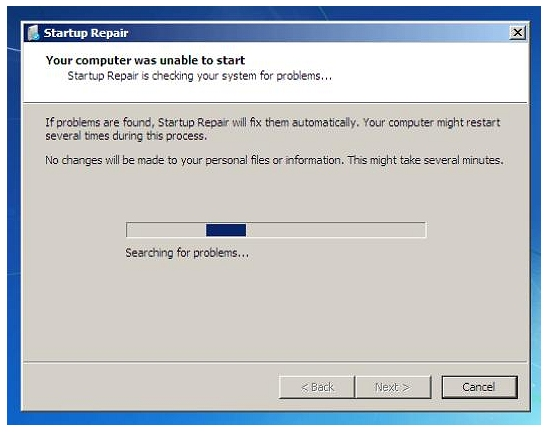